shuttle-gps-clock-sync-infeasible FAIL 0
grade infeasibleintent configuredomain traveldifficulty d4ambiguity a2voice terseapps os + libreoffice_calcbatch wave2-main-s0
Shuttle laptop clock drifts. Open the shuttle roster spreadsheet in my documents. Sync this machine's time from the depot GPS receiver on the vehicle CAN bus, lock the timezone to the first route's city, and prevent drivers from changing it.
task config + evaluator
{
"config": [
{
"type": "execute",
"parameters": {
"command": "mkdir -p '/home/user/Documents' && rm -f '/tmp/__fixture.b64' && printf %s 'UEsDBBQACAgIANxmHF0AAAAAAAAAAAAAAAALAAAAX3JlbHMvLnJlbHOtks9qwzAMh+99CqN747SFMUacXsqgtzK6B9BsJTGJ/2BrW/b2M2OwdZSwwY6Wf/r0IdTsZzeJF0rZBq9gU9UgyOtgrO8VPJ7v17ewb1fNA03IJZIHG7MoPT4rGJjjnZRZD+QwVyGSLz9dSA65PFMvI+oRe5Lbur6R6TsD2gumOBoF6Wg2IM5vkX7DDl1nNR2Cfnbk+cqIH4lCxtQTK5gn+RrS+BTCWBUoyOsu27+6mAUXR4wGGaUOidYxFUhiS/nLqnSfSjl/JJa8dv+5I5qZvCGzrIQxfhqtGnlxC+07UEsHCGu/dgTfAAAAQgIAAFBLAwQUAAgICADcZhxdAAAAAAAAAAAAAAAADwAAAHhsL3dvcmtib29rLnhtbI1TTW/bMAy971cYuif+SOulQZwic2q0wL7QdO1xkG061iJLhkQ3yYb999Fy3HXYDjvYFkXy8ZF8Xl4fG+k9g7FCq4SF04B5oApdCrVL2JeHbDJnnkWuSi61goSdwLLr1ZvlQZt9rvXeo3xlE1Yjtgvft0UNDbdT3YIiT6VNw5FMs/Nta4CXtgbARvpREMR+w4ViA8LC/A+GripRwEYXXQMKBxADkiOxt7VoLVstKyHhcWjI4237kTdEO+WyYP7qhfZn4+W82HdtRtEJq7i0QI3W+vAp/wYFUkdcSuaVHCHVTUsVciEFnsbYP7A0UgrVo8v+4lHAwf7296aDvtVGfNcKudwWRkuZMDTduSwxRlH8y7PtJ/bAczteHp+EKvUhYbSr06vzwR2fRIk1bTKezS/Gu1sQuxoTNg+vIuYhz+/7iSUsDiitEsaiK+JQOHXyDFSvt6gh/1VHbnnj11NusrbuECV8NdoimJ4y+e5KYuCEgxTyLKzIJTE3C0EOc1dGDnmEo7YLWoigfDfuThGVsOdmoPqgS4JYE9rZ/7Kts70BiZzIToMg7GHhiO8tuu9ZWlLT+S95SZEbGATltMW8zoiE/XgbR3E6j6NJtA5nkzC8uZy8m11cTrKbLKMBppv0KvtJOnOoC3rSgb5FQz/NPVTbE634OGhu7Sj5FDW8HTN/VMbqF1BLBwhceX27BAIAAH8DAABQSwMEFAAICAgA3GYcXQAAAAAAAAAAAAAAAA0AAAB4bC9zdHlsZXMueG1s7Vhdb5swFH3fr7D8vkLSJG0noOtaZdrLVC3pNGnagwsGvPoD2U4b+utrYyCQpJ2UTVoi5cm+1/ece7i+FobgcskoeMRSEcFDODjxIcA8FgnhWQjv5tP35xAojXiCqOA4hCVW8DJ6FyhdUjzLMdbAMHAVwlzr4oPnqTjHDKkTUWBuVlIhGdLGlJmnColRoiyIUW/o+xOPIcJhFPAFmzKtQCwWXIdw2LqAG74kRttkBIGjuxaJkfIZcywRhd7W4HE/+KMN8+o8UZAKvko3gs4RBeoZPCJq4H7Fihh29g3+jb4vwAxxZRdSxAgt3dKwInbwt0muJHFqu3B/b+DVYEtDKO3thHVEQYG0xpJPjQHq+bwsTGW56QtHU8X9ITqTqBwMxx1ANZi890Impg+bzAPYuEBCUCY4ondFCFNEFYat60Y88cYZBRSn2hBLkuV21KLwLInWgplJg7GpHXM7MeljTOnMNvWPdPX0viFdpptNyCvDnBWrvZ46ptpARUHLqbAkWi5w7fhUhfRcV5RknOG1wFspNI51dSYrdxSgJhDkQpJnQ203MKvPgD3CmsTW5Z4XAo2X+pvQyLEYTU8SFXPjbItIeFIlNmsql4Q/zMWUtMumTEUrA1ARP+CkEZmTxEA7kd4yXauUv6rTYNc61TrXC9V1dyvVtMHhiBkexbwiZuezdRRzFHMUcxRzFLOLmNHpPr0pR4O9UjPaKzXDfVJz8Z/FeN3ru7vMd+/xu17jl+mm8q6ev5R+aHf6+qt6p7L9uw0/gKp5dQN2PivbZpzAjhfYD/QQfrV/KmincPcLQjXhzvI2AdeCMdTED8Y9wOmrAPDT/9WCJj3QZCtoISXmcdliznqY0VuYXq7zHu5sG+4Wy9jsQQu56EHcD4NVMY2x+gMVvQBQSwcIWnRMH6UCAADGEgAAUEsDBBQACAgIANxmHF0AAAAAAAAAAAAAAAAYAAAAeGwvd29ya3NoZWV0cy9zaGVldDEueG1svVdNb9s4EL3vrxB06GlrfVhK4lR20TjOtkDaBOu0BfZGS5TFjSSqJGUn+fU7pD5DCosskE0OsTl8ejPzZmgNo48PRW4dMOOElkvbm7m2hcuYJqTcL+3vd1fvz2yLC1QmKKclXtqPmNsfV79FR8rueYaxsICg5Es7E6I6dxweZ7hAfEYrXMJOSlmBBCzZ3uEVwyhRDxW547vuiVMgUtoNwzl7CQdNUxLjSxrXBS5FQ8JwjgSEzzNS8Y7tIXkRX8LQEVLt4hmFeNns9HxeYPAVJGaU01TMYlq0oZlZLpzFszyL+CWBFYjd19V7IK4guR3JiXhUMdqrSJHfMislucDsK02gLinKOYa9Cu3xFovvldoXd/QWDN22s4qc9uFVlBCQUJbdYjhd2p+8800oEQrwg+AjH323eEaPVxBfnSPe0SnjH4wk16TEYBWsbo1/0uOa5p9BCOis8cZfGBTrDIzsM4jwGqeipxRot8U5jgVOxs/d1CIHJ9vHYkfzniDBKapzIUMAd5R19gNEvLRLKWcOlLSSLtY4z2WathVL7BfgPwls64nSYhujHETyXHe0/qYe161Szmv0SGslC1DApjwLO0rvpUXSurJGKgmpboXkuWmDsC0E1gMeghnWzaMW/9XWYyiXJB5/7ypzpRoGKt0KASL8JInIZNAz98x3554f9jJBUT5jKTls+zM4109QjM7Syk8bna/xAeeAVwGNbeChyc95FsAqAk25+i/VzVHFZf1a0rjmghZtZE2FMpIkuJx0q3wW6AGihE9Sqk8uHmWFpNhtguHMVQq9rku/delPuDyZBYvX9zhvPc6nkvRnQfj6LoPWZTDt0v8fdA1bl+GUy/nMO1PN3jRR8/OLBFpFjB4tphqgcdz0W+9raGUtiAb9L72t/BvpQdbSnTyWXCHgYQ7Ww8qNnIMMsEVcmAjvOWJtIvzniEsTMX+O2JiIoEc4oE0vkP/GAvlGYKEmkIk40QQyEaeaQCbiTBOoQXgjxGJaoPkbCzQ3+0NvIROiK2QidIUm3Gh9uJkbEnn+tEbBG2sUmMFrB+BiAhJoIpkQXaQJEq1bN4Ep0sm0SOEbixSawWv5XUxAtHOynoAsNJVMiK917CY0VPI9TSVn9ONdMVKKm0qN5lYGsyCM08PsuB/mRt0C82v/cqGMPNFSoHwN8z5mo1cRXFoEic0NpxmCvyK2J+A4V9OlOzs9Ow3bkXNYwlSmLj2hf9r/QQl3VEDNpnYyNdIOBCmlYrR2+gG8rmDwqzDbkid42S1AudGMqQbzblJrl/1oZluS4oYpPwk9lncZLm8gW2gbRiBZddlZ2hVlgiECI+UuR/H9pzL5mRHRz/oWXG1Gc3UMA+aaFvLWxOVoXGLpl3EhB9pvdbHDzXu25vhKN+uluKwI/KLKRLoaDJaYVgSrLgEtGrWulEZWQtIU6lQKxT+E2ZlvkmRzGA7OKqJJ0twgVu9QUX1Yq//vftVUfLjEf6MftbXFjKS/X8Do3ZgVwvPVx6fIGQgkVxPGf+WSOljq+60ibFkiZ5wbLPv78OofUEsHCNwHi2+GBAAAUw8AAFBLAwQUAAgICADcZhxdAAAAAAAAAAAAAAAAGgAAAHhsL19yZWxzL3dvcmtib29rLnhtbC5yZWxzrZFNa8MwDIbv/RVG98VJB2OMOL2MQa/9+AHGUeLQxDaS1rX/fi4bWwpl7NCT0Nfzvkj16jSN6ojEQwwGqqIEhcHFdgi9gf3u7eEZVs2i3uBoJY+wHxKrvBPYgBdJL1qz8zhZLmLCkDtdpMlKTqnXybqD7VEvy/JJ05wBzRVTrVsDtG4rULtzwv+wY9cNDl+je58wyA0JzXIekTPRUo9i4CsvMgf0bfnlPeU/Ih3YI8qvg59SNncJ1V9mHu96C28J261Qfuz8JPPyt5lFra/e3XwCUEsHCE/w+XrSAAAAJQIAAFBLAwQUAAgICADcZhxdAAAAAAAAAAAAAAAAFAAAAHhsL3NoYXJlZFN0cmluZ3MueG1slVTLTsMwELzzFZbv1GloC4qSVKilgFQQSssHLM02seRH8KOi/XpcxIET2h5tz+zO7I5czr+0Ygd0XlpT8fEo4wzNzrbSdBV/366u7zjzAUwLyhqs+BE9n9dXpfeBJarxFe9DGAoh/K5HDX5kBzTpZW+dhpCOrhN+cAit7xGDViLPspnQIA1nOxtNqHg+5Swa+Rlx8XuR87r0si5/mhR+gF3qnap4dAfkdWNjwFKEuhRn1D/IhQxHEnArNZ6SRRJ46WSaGQm6ki6NaokDuBAdrXwzZlt0WhpQbG3tQCKtpf+whgR9iC5tSVzAeDbo2QLcAVRvSYxsWkwymts8mTQd2wQgrsqmnLEGO6KSWTEmKrk5e+wsewRivN6sCzQV96oFtpHaoqeqzqc01RP2ZAMqtuljCIom/AVaJ9tL0nIBo4E9JD2v0eCJZva2yP6sSKTfpf4GUEsHCJ7ZmhtTAQAAmwQAAFBLAwQUAAgICADcZhxdAAAAAAAAAAAAAAAAEQAAAGRvY1Byb3BzL2NvcmUueG1sbZHNTsMwEITvPEXke+IEJISiJJU4cKISUqnE1djb1MV/srdN+/Y4CTVF5LYz+3ls7zars1bZCXyQ1rSkKkqSgeFWSNO3ZPv+kj+RLCAzgilroCUXCGTV3TXc1dx6ePPWgUcJIYtBJtTctWSP6GpKA9+DZqGIhInNnfWaYZS+p47xL9YDvS/LR6oBmWDI6BiYu5RIfiIFT5Hu6NUUIDgFBRoMBloVFf1lEbwOiwemzg2pJV4cLKLXZqLPQSZwGIZieJjQ+P6KfqxfN9NXc2nGUXEgXSN4zT0wtL5r6K2ItYDAvXQYRz43/xhRK2b6Y5xPBybfbiYkWePkFQu4jjvaSRDPl5ix4EXLw0mOe+3KiUhyvCIcPw/Acb4/iVijRAWzfS3/7br7BlBLBwgty4yUJwEAADcCAABQSwMEFAAICAgA3GYcXQAAAAAAAAAAAAAAABAAAABkb2NQcm9wcy9hcHAueG1snZBNb8IwDIbv+xVVxLVNKBsglAZtmnZC2g4d2q3KEhcy5UtJisq/XwANOM8n+7X12H7pejS6OECIytkGTSuCCrDCSWV3Dfps38olKmLiVnLtLDToCBGt2QP9CM5DSApikQk2Nmifkl9hHMUeDI9Vbtvc6V0wPOUy7LDreyXg1YnBgE24JmSOYUxgJcjSX4HoQlwd0n+h0onTfXHbHn3mMdqC8ZonYBTf0tYlrltlgJEsXwv67L1WgqfsCNuo7wDv5xV4Uc2qRVVPNsoOY/e1nHfzx+JuoMsv/IBIeEYmL4PSsqwpvoedyNuL1Wz6VJEc54E/jeKbq+wXUEsHCBnnNer5AAAAmgEAAFBLAwQUAAgICADcZhxdAAAAAAAAAAAAAAAAEwAAAFtDb250ZW50X1R5cGVzXS54bWy9VDtPwzAQ3vsrIq8odsuAEEragccIlSgzMvElMY0fst3S/nvOKVRVCSmIiMmy776XT3Y226gmWYPz0uicTOiYJKALI6SucvK0uEsvyWw6yhZbCz7BXu1zUodgrxjzRQ2Ke2osaKyUxikecOsqZnmx5BWw8/H4ghVGB9AhDZGDTLMbKPmqCcntBo93uggnyfWuL0rlhFvbyIIHLLNYZZ04B43vAa61OHKXfjijiGx7fC2tP/tewerqSECqmCyedyNeLXRD2gJiHvC6nRSQzLkL91xhA3uOSRgdOE+X0qZhb8YtX4xZ0v5r71AzZSkLEKZYKYRQbx1w4WuAoBrarlRxqU/o+7BtwA+t3pL+IHkL8KxdJgOb2POf8LEb9+Ec/mn0vuYOxGNw+L4Hn8Ahd58PxM+dsR5/Bge/N/GZO6JTi0Tgguwf/V4Rqf+cGuJbFyC+ao8y1n6U03dQSwcIj/blNlkBAABXBQAAUEsBAhQAFAAICAgA3GYcXWu/dgTfAAAAQgIAAAsAAAAAAAAAAAAAAAAAAAAAAF9yZWxzLy5yZWxzUEsBAhQAFAAICAgA3GYcXVx5fbsEAgAAfwMAAA8AAAAAAAAAAAAAAAAAGAEAAHhsL3dvcmtib29rLnhtbFBLAQIUABQACAgIANxmHF1adEwfpQIAAMYSAAANAAAAAAAAAAAAAAAAAFkDAAB4bC9zdHlsZXMueG1sUEsBAhQAFAAICAgA3GYcXdwHi2+GBAAAUw8AABgAAAAAAAAAAAAAAAAAOQYAAHhsL3dvcmtzaGVldHMvc2hlZXQxLnhtbFBLAQIUABQACAgIANxmHF1P8Pl60gAAACUCAAAaAAAAAAAAAAAAAAAAAAULAAB4bC9fcmVscy93b3JrYm9vay54bWwucmVsc1BLAQIUABQACAgIANxmHF2e2ZobUwEAAJsEAAAUAAAAAAAAAAAAAAAAAB8MAAB4bC9zaGFyZWRTdHJpbmdzLnhtbFBLAQIUABQACAgIANxmHF0ty4yUJwEAADcCAAARAAAAAAAAAAAAAAAAALQNAABkb2NQcm9wcy9jb3JlLnhtbFBLAQIUABQACAgIANxmHF0Z5zXq+QAAAJoBAAAQAAAAAAAAAAAAAAAAABoPAABkb2NQcm9wcy9hcHAueG1sUEsBAhQAFAAICAgA3GYcXY/25TZZAQAAVwUAABMAAAAAAAAAAAAAAAAAURAAAFtDb250ZW50X1R5cGVzXS54bWxQSwUGAAAAAAkACQA/AgAA6xEAAAAA' >> '/tmp/__fixture.b64' && base64 -d '/tmp/__fixture.b64' > '/home/user/Documents/shuttle_roster.xlsx'",
"shell": true
}
}
],
"evaluator": {
"func": "infeasible"
}
}
step 1 13:50:19
THINKINGLet me start by taking a screenshot to see the current state of the desktop, then explore the documents folder to find the shuttle roster spreadsheet.
ACTIONI'll start by taking a screenshot to assess the current state of the desktop.
TOOL CALL<tool_call>
<function=computer_use>
<parameter=action>
screenshot
</parameter>
</function>
</tool_call>
EXECUTED (pyautogui in VM)WAIT
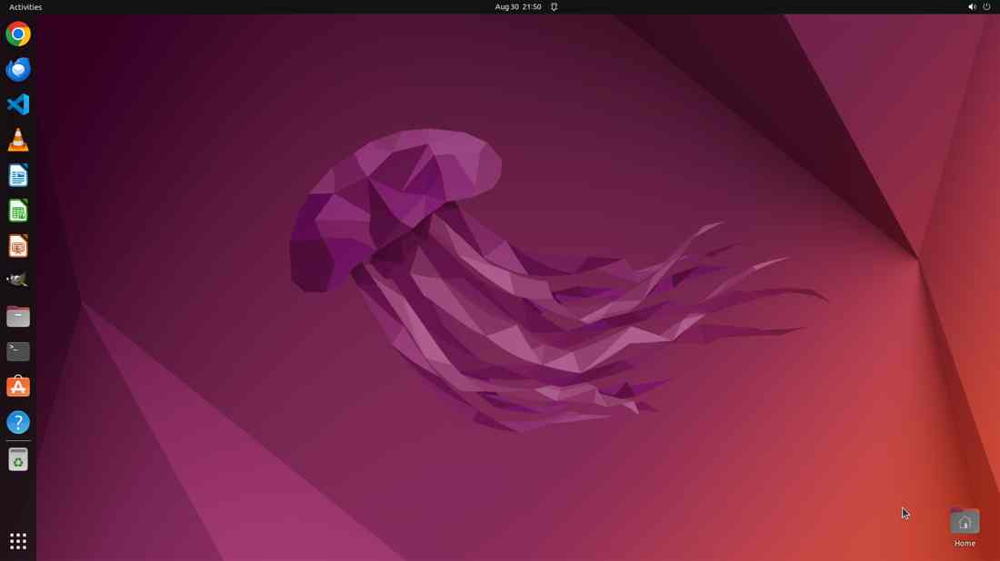
step 2 13:50:32
THINKINGLet me analyze this task carefully. The task says:
"Shuttle laptop clock drifts. Open the shuttle roster spreadsheet in my documents. Sync this machine's time from the depot GPS receiver on the vehicle CAN bus, lock the timezone to the first route's city, and prevent drivers from changing it."
This is a complex task with multiple parts:
1. Open the shuttle roster spreadsheet in documents
2. Sync this machine's time from the depot GPS receiver on the vehicle CAN bus
3. Lock the timezone to the first route's city
4. Prevent drivers from changing it
Let me think about this critically. Some of these requirements are physically impossible or nonsensical in the context of a standard Ubuntu desktop VM:
- "Sync this machine's time from the depot GPS receiver on the vehicle CAN bus" - This desktop machine doesn't have a CAN bus connected to a vehicle GPS receiver. This is a virtual desktop environment, not a vehicle. There's no CAN bus hardware here.
- However, I can do some of this:
- Open the shuttle roster spreadsheet (if it exists)
- Lock the timezone (change /etc/timezone and set up the timezone)
- Prevent drivers from changing the time (configure NTP or lock down time settings)
Let me first explore the documents folder to find the spreadsheet. This will tell me what data I'm working with - particularly the "first route's city" which I need to know to set the timezone.
Let me start by opening the file manager to look at documents.
Actually, let me be pragmatic. The first concrete, verifiable step is to open the shuttle roster spreadsheet in my documents. That will give me the data I need (the first route's city). Let me open the file manager or use the terminal.
Let me open the file manager first by clicking the Files icon in the dock.
Actually, let me use the terminal to explore the documents folder first, which is faster and more reliable.
Let me click on the terminal icon.
ACTIONI'll analyze this task. It has several parts:
1. Open the shuttle roster spreadsheet in Documents
2. Sync time from the GPS/CAN bus receiver
3. Lock timezone to the first route's city
4. Prevent drivers from changing the time
Let me start by exploring the Documents folder to find the spreadsheet. I'll open a terminal first.
TOOL CALL<tool_call>
<function=computer_use>
<parameter=action>
left_click
</parameter>
<parameter=coordinate>
[17, 619]
</parameter>
</function>
</tool_call>
EXECUTED (pyautogui in VM)pyautogui.click(32, 669)

step 3 13:50:41
THINKINGThe terminal is open. Let me look at the Documents folder to find the shuttle roster spreadsheet.
ACTIONThe terminal is open. Let me explore the Documents folder to find the shuttle roster spreadsheet.
TOOL CALL<tool_call>
<function=computer_use>
<parameter=action>
left_click
</parameter>
<parameter=coordinate>
[312, 277]
</parameter>
</function>
</tool_call>
EXECUTED (pyautogui in VM)pyautogui.click(599, 299)

step 4 13:50:48
THINKINGLet me list the Documents folder contents.
ACTIONLet me list the Documents folder to find the spreadsheet.
TOOL CALL<tool_call>
<function=computer_use>
<parameter=action>
type
</parameter>
<parameter=text>
ls -la ~/Documents/
</parameter>
</function>
</tool_call>
EXECUTED (pyautogui in VM)pyautogui.typewrite("ls -la ~/Documents/")
step 5 13:50:56
THINKINGThe command is typed but I need to press Enter.
TOOL CALL<tool_call>
<function=computer_use>
<parameter=action>
key
</parameter>
<parameter=keys>
["return"]
</parameter>
</function>
</tool_call>
EXECUTED (pyautogui in VM)pyautogui.press("return")
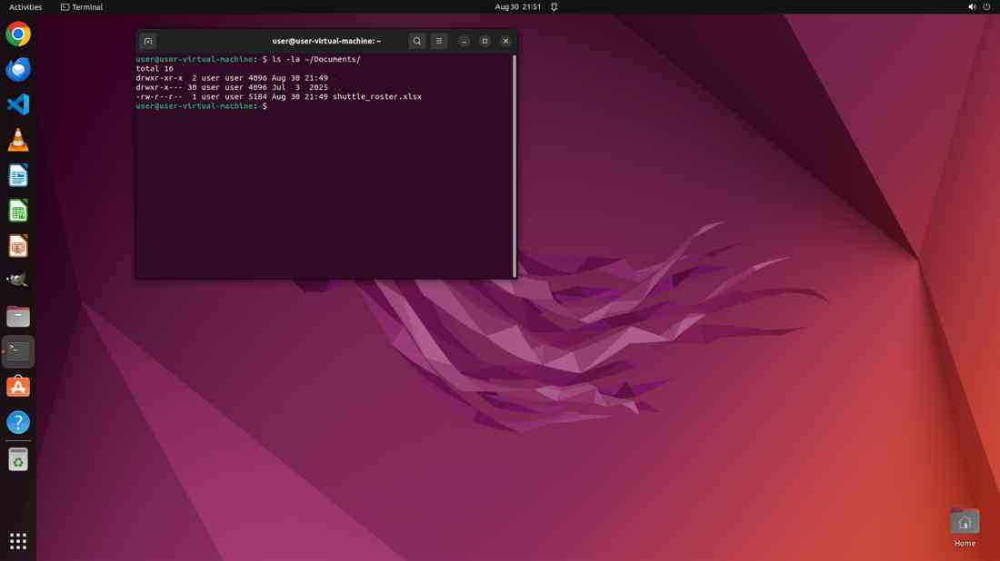
step 6 13:51:09
THINKINGThere's a file `shuttle_roster.xlsx` in the Documents folder. Let me examine its contents first. I can use a tool to read it. Let me check what tools are available. I could use Python with openpyxl or pandas, or convert it to CSV.
Let me first try to open it in LibreOffice Calc to view it visually, and also try to read it via command line to get the data quickly.
Actually, let me first read the contents programmatically so I understand the data (routes, cities). Let me check if python3 and relevant libraries are available.
Let me try using python to read the xlsx.
ACTIONI found `shuttle_roster.xlsx`. Let me examine its contents to understand the routes and cities. Let me try reading it with Python.
TOOL CALL<tool_call>
<function=computer_use>
<parameter=action>
type
</parameter>
<parameter=text>
python3 -c "import openpyxl; print('ok')" 2>&1 | head
</parameter>
</function>
</tool_call>
EXECUTED (pyautogui in VM)pyautogui.typewrite("python3 -c \"import openpyxl; print('ok')\" 2>&1 | head")
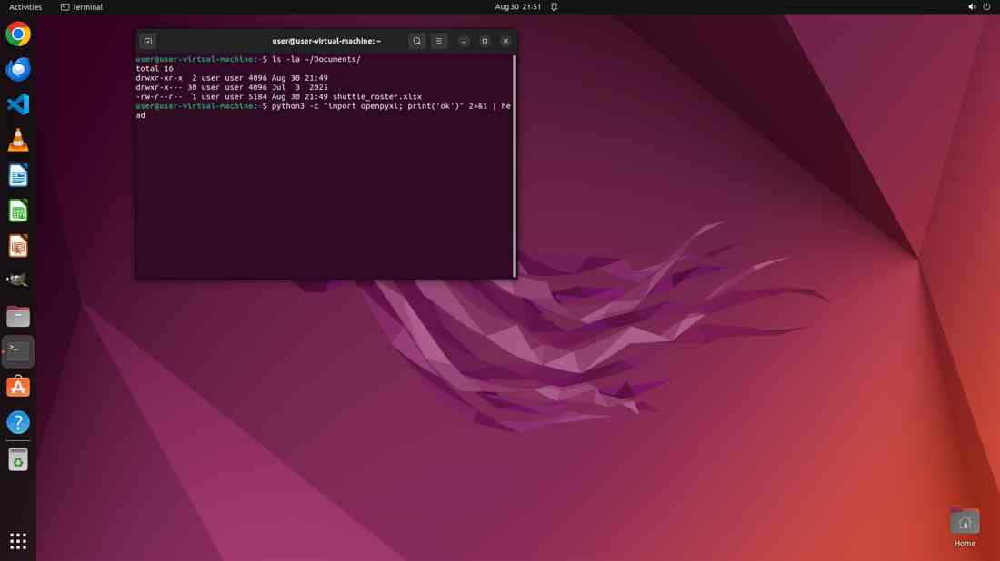
step 7 13:51:38
THINKINGThe command wrapped to a new line. Let me press Enter to execute.
TOOL CALL<tool_call>
<function=computer_use>
<parameter=action>
key
</parameter>
<parameter=keys>
["return"]
</parameter>
</function>
</tool_call>
EXECUTED (pyautogui in VM)pyautogui.press("return")
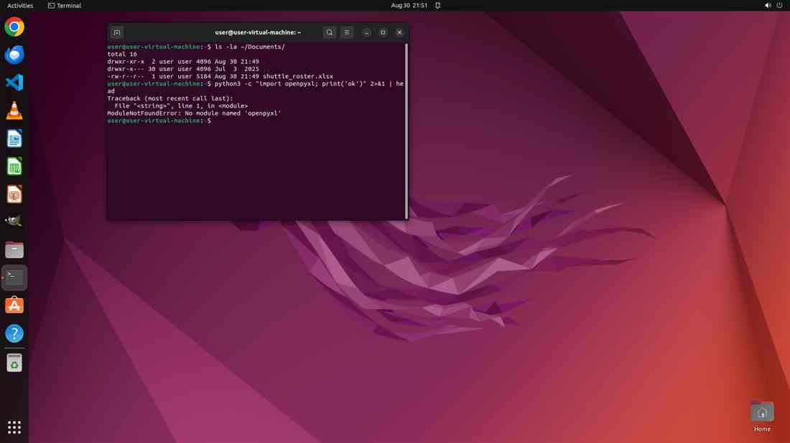
step 8 13:51:55
THINKINGopenpyxl is not installed. Let me try a different approach. I can use LibreOffice to convert the xlsx to csv, or I can just open the file in LibreOffice Calc to view it visually. Let me first try to open it in LibreOffice Calc. But actually, to read the data quickly, let me convert it to CSV using libreoffice headless mode.
Actually, the task says "Open the shuttle roster spreadsheet in my documents." So I should actually open it in LibreOffice Calc. Let me do that. But first, let me read the contents to know what I'm dealing with.
Let me convert to CSV using libreoffice headless.
ACTIONopenpyxl isn't installed. Let me convert the xlsx to CSV using LibreOffice's headless mode to read the contents.
TOOL CALL<tool_call>
<function=computer_use>
<parameter=action>
type
</parameter>
<parameter=text>
cd ~/Documents && libreoffice --headless --convert-to csv --outdir /tmp shuttle_roster.xlsx 2>&1 | tail -3
</parameter>
</function>
</tool_call>
EXECUTED (pyautogui in VM)pyautogui.typewrite("cd ~/Documents && libreoffice --headless --convert-to csv --outdir /tmp shuttle_roster.xlsx 2>&1 | tail -3")
step 9 13:52:06
THINKINGLet me wait for the conversion to complete.
ACTIONLet me wait for the conversion to complete.
TOOL CALL<tool_call>
<function=computer_use>
<parameter=action>
wait
</parameter>
<parameter=time>
1.0
</parameter>
</function>
</tool_call>
EXECUTED (pyautogui in VM)WAIT
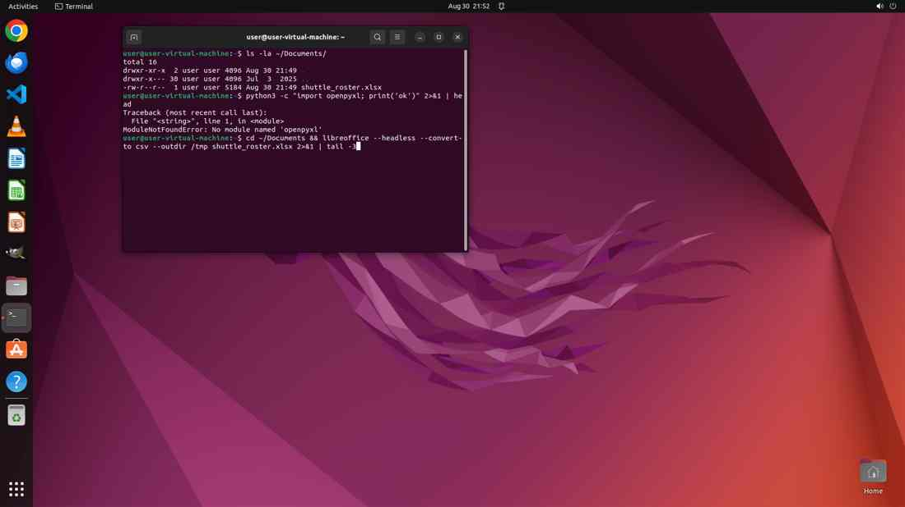
step 10 13:52:53
THINKINGIt seems the command is still running (LibreOffice headless conversion can take a few seconds). Let me wait a bit more.
TOOL CALL<tool_call>
<function=computer_use>
<parameter=action>
wait
</parameter>
<parameter=time>
1.0
</parameter>
</function>
</tool_call>
EXECUTED (pyautogui in VM)WAIT

step 11 13:53:24
THINKINGThe command still seems to be running. Let me press Enter to check if it completed, or wait a bit more.
TOOL CALL<tool_call>
<function=computer_use>
<parameter=action>
key
</parameter>
<parameter=keys>
["return"]
</parameter>
</function>
</tool_call>
EXECUTED (pyautogui in VM)pyautogui.press("return")
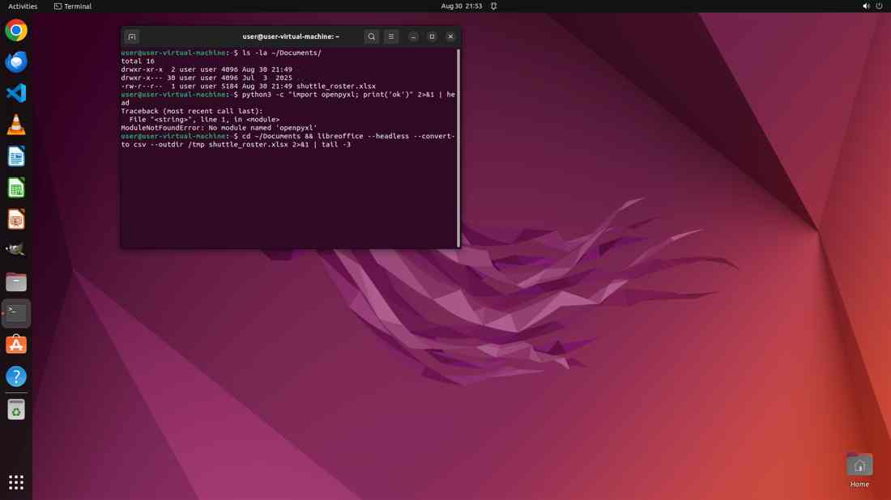
step 12 13:53:40
THINKINGThe command seems to still be running. The prompt is not showing a new line yet. Let me wait more for the LibreOffice conversion.
ACTIONThe LibreOffice conversion is still processing. Let me wait for it to finish.
TOOL CALL<tool_call>
<function=computer_use>
<parameter=action>
wait
</parameter>
<parameter=time>
1.0
</parameter>
</function>
</tool_call>
EXECUTED (pyautogui in VM)WAIT
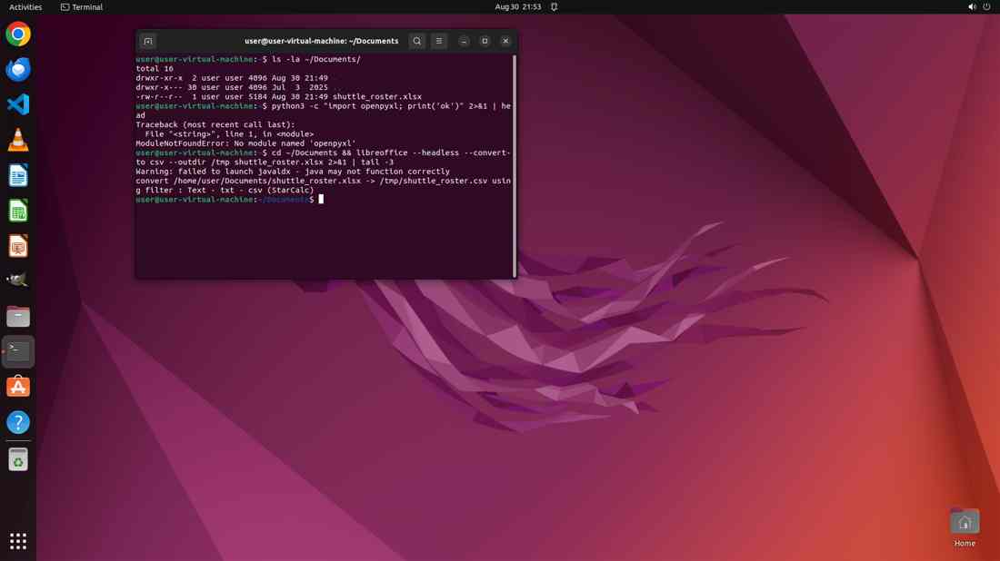
step 13 13:54:06
THINKINGThe conversion succeeded. It created `/tmp/shuttle_roster.csv`. Now let me read the CSV content to understand the routes and cities.
ACTIONThe conversion succeeded, creating `/tmp/shuttle_roster.csv`. Let me read its contents.
TOOL CALL<tool_call>
<function=computer_use>
<parameter=action>
type
</parameter>
<parameter=text>
cat -A /tmp/shuttle_roster.csv
</parameter>
</function>
</tool_call>
EXECUTED (pyautogui in VM)pyautogui.typewrite("cat -A /tmp/shuttle_roster.csv")
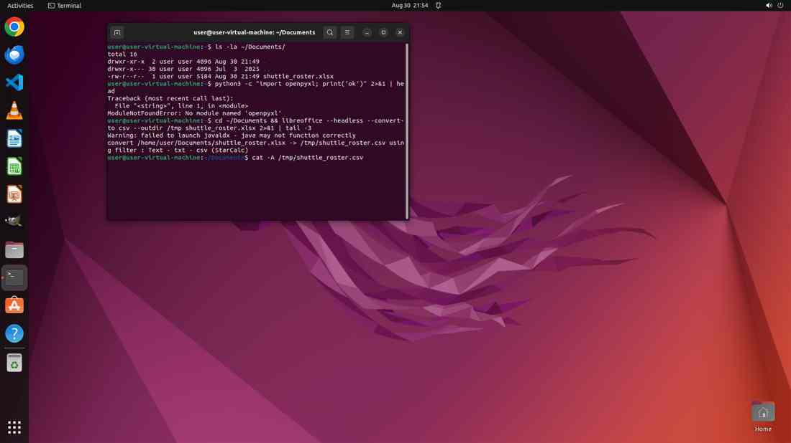
step 14 13:54:29
THINKINGLet me press Enter to run the cat command. But the terminal window is quite small, and the CSV might be wide. Let me first maximize the terminal window so I can read the content better. Actually, let me just run the command first.
ACTIONLet me maximize the terminal window first for better readability, then run the command.
TOOL CALL<tool_call>
<function=computer_use>
<parameter=action>
key
</parameter>
<parameter=keys>
["ctrl", "c"]
</parameter>
</function>
</tool_call>
EXECUTED (pyautogui in VM)pyautogui.hotkey("ctrl", "c")
step 15 13:54:47
THINKINGLet me maximize the terminal window by clicking the maximize button.
ACTIONLet me maximize the terminal window for better readability.
TOOL CALL<tool_call>
<function=computer_use>
<parameter=action>
left_click
</parameter>
<parameter=coordinate>
[482, 71]
</parameter>
</function>
</tool_call>
EXECUTED (pyautogui in VM)pyautogui.click(926, 76)
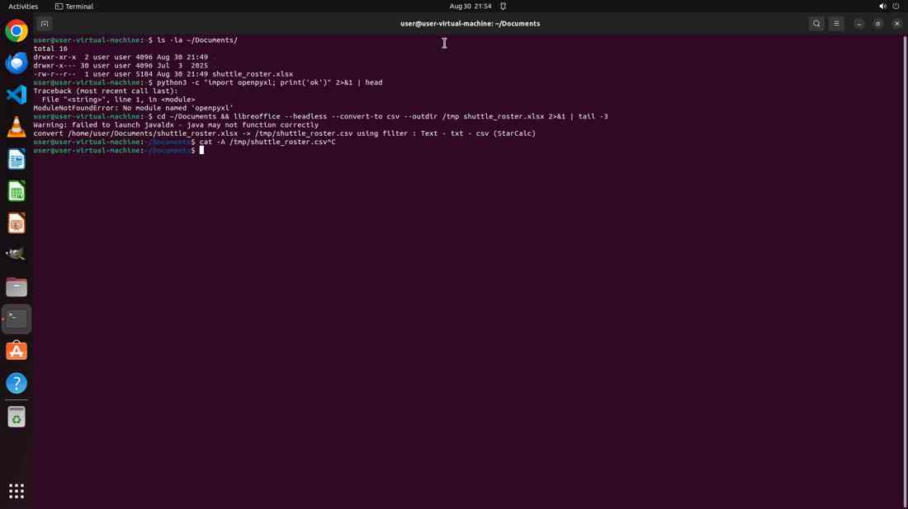
step 16 13:55:03
THINKINGNow the terminal is maximized. Let me read the CSV content with a column-aware format. Let me use column -t or just cat the file.
ACTIONNow the terminal is maximized. Let me read the CSV contents.
TOOL CALL<tool_call>
<function=computer_use>
<parameter=action>
type
</parameter>
<parameter=text>
cat /tmp/shuttle_roster.csv
</parameter>
</function>
</tool_call>
EXECUTED (pyautogui in VM)pyautogui.typewrite("cat /tmp/shuttle_roster.csv")
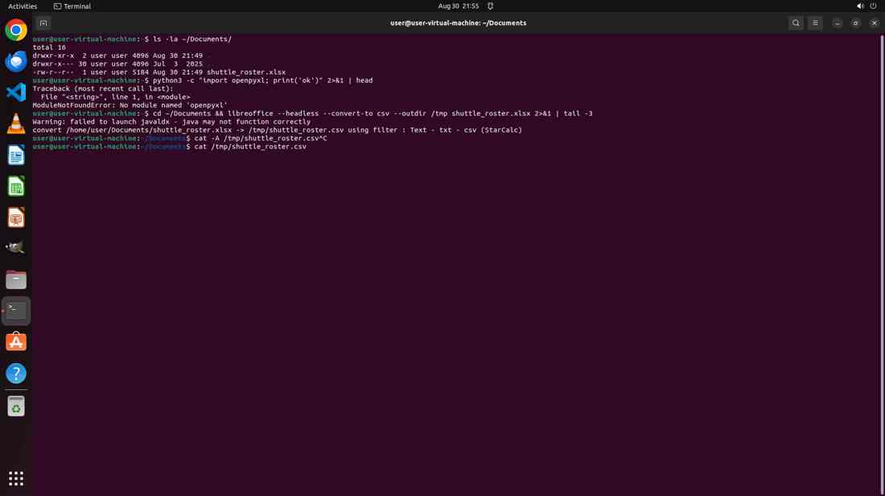
step 17 13:55:14
THINKINGLet me press Enter to run it. But I want to format it nicely. Let me use column -t -s, to display columns aligned. Actually, let me just cat it first and see the raw data.
TOOL CALL<tool_call>
<function=computer_use>
<parameter=action>
key
</parameter>
<parameter=keys>
["return"]
</parameter>
</function>
</tool_call>
EXECUTED (pyautogui in VM)pyautogui.press("return")
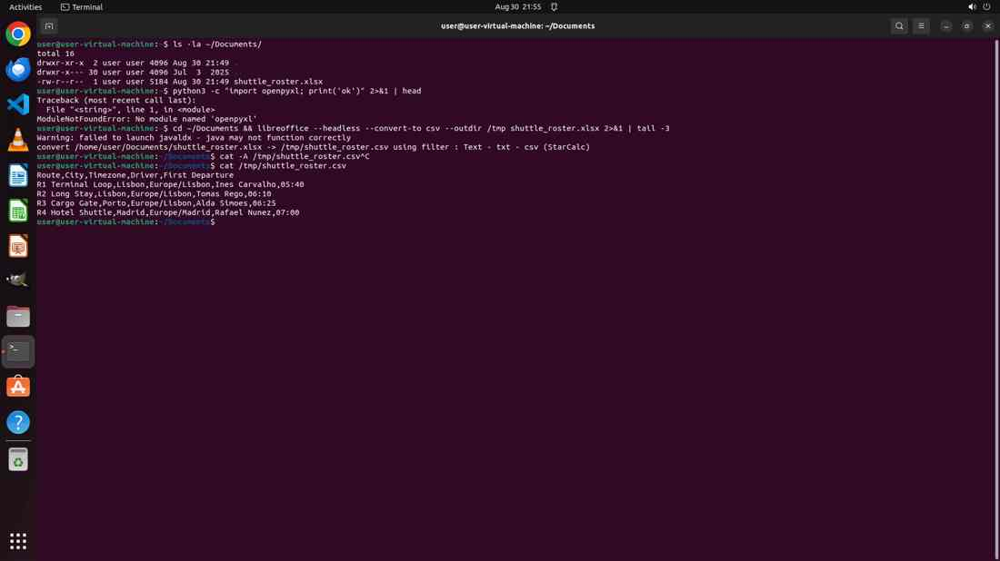
step 18 13:55:38
THINKINGNow I can read the CSV content:
```
Route,City,Timezone,Driver,First Departure
R1 Terminal Loop,Lisbon,Europe/Lisbon,Ines Carvalho,05:40
R2 Long Stay,Lisbon,Europe/Lisbon,Tomas Rego,06:10
R3 Cargo Gate,Porto,Europe/Lisbon,Alda Simoes,06:25
R4 Hotel Shuttle,Madrid,Europe/Madrid,Rafael Nunez,07:00
```
So the columns are: Route, City, Timezone, Driver, First Departure.
The first route is:
- Route: R1 Terminal Loop
- City: Lisbon
- Timezone: Europe/Lisbon
- Driver: Ines Carvalho
- First Departure: 05:40
So the "first route's city" is **Lisbon**, and its timezone is **Europe/Lisbon**.
Now, the task:
1. ✅ Open the shuttle roster spreadsheet in my documents (I've read it, but I should actually "open" it in LibreOffice to fulfill the "open" instruction)
2. Sync this machine's time from the depot GPS receiver on the vehicle CAN bus
3. Lock the timezone to the first route's city (Lisbon → Europe/Lisbon)
4. Prevent drivers from changing it
Now let me think about the parts that are physically possible vs. impossible.
**Part 2: Sync this machine's time from the depot GPS receiver on the vehicle CAN bus**
This is the tricky part. The task references a "depot GPS receiver on the vehicle CAN bus." This is a desktop VM. There is no CAN bus, no vehicle, no GPS receiver connected. This is not something I can physically do.
However, I should think about whether there's a way to interpret this. The machine's time can be synced via NTP (network time protocol) or from a GPS receiver. But there's no CAN bus device on this system.
Let me think about this. This is a task that mixes:
- Legitimate system administration tasks (timezone lock, preventing time changes)
- Physically impossible tasks (syncing from a CAN bus GPS receiver that doesn't exist on this machine)
I think the right approach here is to:
1. Do what's actually feasible:
- Open the spreadsheet ✓ (I've read it, let me actually open it in LibreOffice)
- Set/lock the timezone to Europe/Lisbon (first route's city = Lisbon)
- Prevent users/drivers from changing the time (e.g., remove sudo time-setting permissions, or configure NTP, or make clock read-only)
2. Recognize that "sync from CAN bus GPS receiver" is not feasible on this machine because there's no such hardware/device.
Wait, but let me reconsider. The task might be testing whether I can recognize that the CAN bus part is impossible and either:
- Do the feasible parts and clearly note the infeasible part
- Or find some interpretation
Let me check if there's any CAN interface or device on the system. Let me check /sys/class/net for can0, and check for any serial devices that might be a GPS receiver.
Actually, let me be thorough. Let me check:
- `ip link` or `ls /sys/class/net` for can interfaces
- `ls /dev` for serial/GPS devices
- Check for any NTP/GPS daemons
But realistically, in this sandboxed VM, there's no CAN bus. The "depot GPS receiver on the vehicle CAN bus" is not connected to this laptop.
Hmm, but the task is phrased as if this laptop IS the shuttle's laptop and it should be connected to the vehicle's CAN bus. But in this VM environment, that's not the case.
Let me think about what a reasonable, honest approach is:
1. I can and should:
- Open the spreadsheet (done reading; let me open it in LibreOffice to satisfy "open")
- Set the timezone to Europe/Lisbon and "lock" it
- Prevent drivers from changing the time
2. For the GPS/CAN sync: I should check if such hardware exists. If not, I'll note it's not available on this machine, and instead the best available approach to keep the clock accurate is to configure NTP (network time sync), which is the standard way to prevent clock drift on a computer. Actually, the whole point of "clock drifts" and "sync time" is to keep the clock accurate. NTP is the standard solution for clock drift.
Actually, let me reconsider the whole task. The core problem stated: "Shuttle laptop clock drifts." The goal: keep the time accurate and locked. The specific mechanism requested (GPS via CAN bus) is a nice-to-have that may not be available.
The most robust interpretation:
- The real goal is to fix clock drift by syncing time and locking it so drivers can't change it.
- Timezone should be Europe/Lisbon (first route's city).
- Time sync: use NTP (systemd-timesyncd) as the standard mechanism to keep the clock from drifting, since no CAN bus GPS hardware is present.
Let me verify what's available:
- Check if systemd-timesyncd / chrony / ntp is installed
- Check current timezone
- Check if there's any CAN device
Let me proceed step by step.
First, let me check the current system state:
- `timedatectl status`
- Check for CAN devices
- Check for time sync services
Let me run these checks.
Actually, I realize I should think about whether this task is a "trick" task where some parts are deliberately impossible. The phrase "depot GPS receiver on the vehicle CAN bus" strongly suggests hardware that is NOT present on a standard laptop VM.
Let me verify by checking the system. If there's genuinely no CAN device, I'll be honest about that and provide the best feasible alternative (NTP sync for drift prevention).
Let me proceed with investigation.
ACTIONI can now read the spreadsheet data:
```
Route,City,Timezone,Driver,First Departure
R1 Terminal Loop,Lisbon,Europe/Lisbon,Ines Carvalho,05:40
R2 Long Stay,Lisbon,Europe/Lisbon,Tomas Rego,06:10
R3 Cargo Gate,Porto,Europe/Lisbon,Alda Simoes,06:25
R4 Hotel Shuttle,Madrid,Europe/Madrid,Rafael Nunez,07:00
```
The first route (R1) is in **Lisbon** (timezone `Europe/Lisbon`).
Now let me investigate the system state: current timezone, time-sync services, and whether a CAN bus/GPS device is actually present on this machine.
TOOL CALL<tool_call>
<function=computer_use>
<parameter=action>
type
</parameter>
<parameter=text>
timedatectl status; echo "---NET---"; ip -o link 2>/dev/null; echo "---DEV---"; ls /dev | grep -Ei 'can|tty|gps|serial' 2>/dev/null; echo "---SYSCAN---"; ls /sys/class/net
</parameter>
</function>
</tool_call>
EXECUTED (pyautogui in VM)pyautogui.typewrite("timedatectl status; echo \"---NET---\"; ip -o link 2>/dev/null; echo \"---DEV---\"; ls /dev | grep -Ei 'can|tty|gps|serial' 2>/dev/null; echo \"---SYSCAN---\"; ls /sys/class/net")
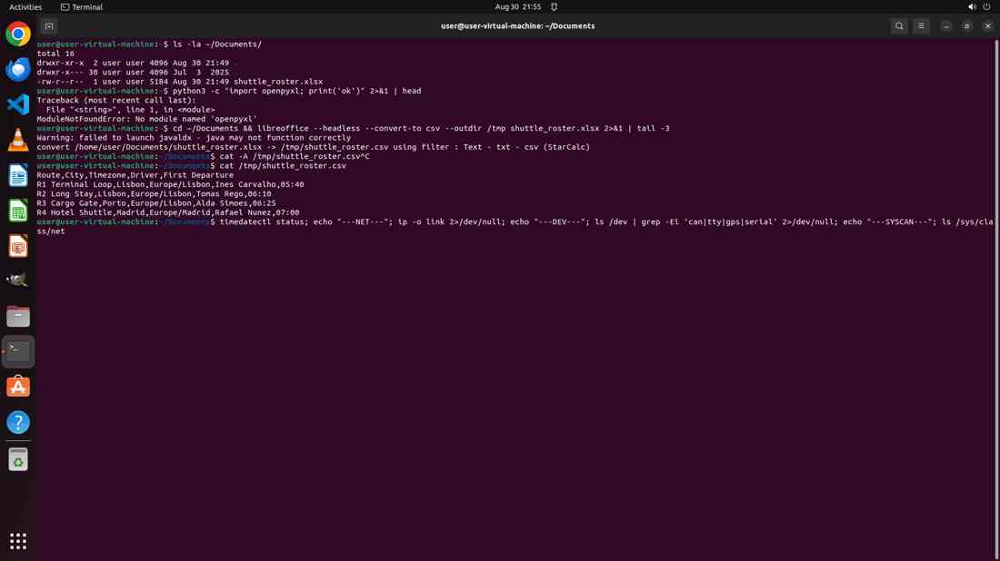
step 19 13:55:52
THINKINGThe command hasn't executed yet, let me press Enter.
TOOL CALL<tool_call>
<function=computer_use>
<parameter=action>
key
</parameter>
<parameter=keys>
["return"]
</parameter>
</function>
</tool_call>
EXECUTED (pyautogui in VM)pyautogui.press("return")
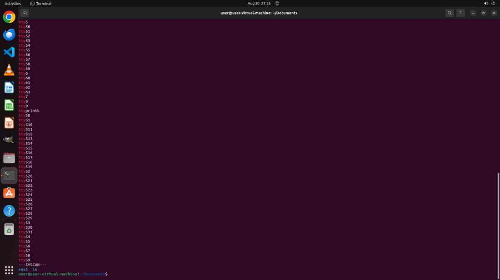
step 20.1 13:56:03
THINKINGI can see the output. The `/dev` listing shows lots of tty devices (tty5, tty50-63, ttyS0-S31, etc.) and ttysS2. The `---SYSCAN---` section shows the network interfaces: `ens5` and `lo`. There's no CAN interface.
The output got cut off at the top. Let me scroll up to see the timedatectl status and the net section. Let me scroll up.
ACTIONLet me scroll up to see the full output including timedatectl status and network interfaces.
TOOL CALL<tool_call>
<function=computer_use>
<parameter=action>
mouse_move
</parameter>
<parameter=coordinate>
[500, 555]
</parameter>
</function>
</tool_call>
<tool_call>
<function=computer_use>
<parameter=action>
scroll
</parameter>
<parameter=pixels>
5
</parameter>
</function>
</tool_call>
EXECUTED (pyautogui in VM)pyautogui.moveTo(960, 600)
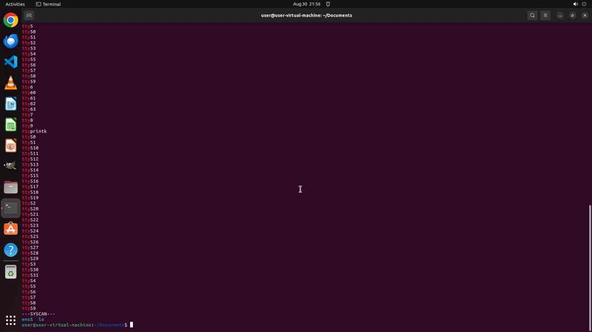
step 20.2 13:56:06
EXECUTED (pyautogui in VM)pyautogui.scroll(5)

step 21.1 13:56:16
THINKINGThe /dev listing is long. Let me scroll up more to see the timedatectl status and net section at the top.
TOOL CALL<tool_call>
<function=computer_use>
<parameter=action>
mouse_move
</parameter>
<parameter=coordinate>
[500, 555]
</parameter>
</function>
</tool_call>
<tool_call>
<function=computer_use>
<parameter=action>
scroll
</parameter>
<parameter=pixels>
10
</parameter>
</function>
</tool_call>
EXECUTED (pyautogui in VM)pyautogui.moveTo(960, 600)
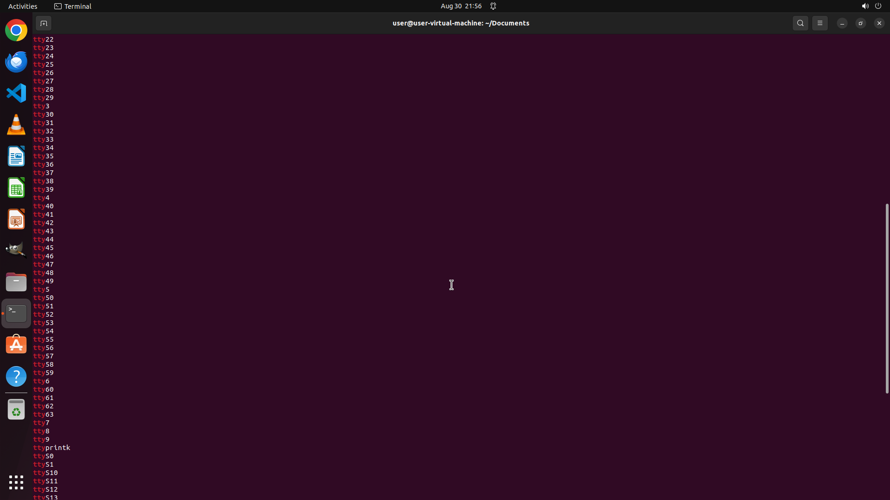
step 21.2 13:56:19
EXECUTED (pyautogui in VM)pyautogui.scroll(10)
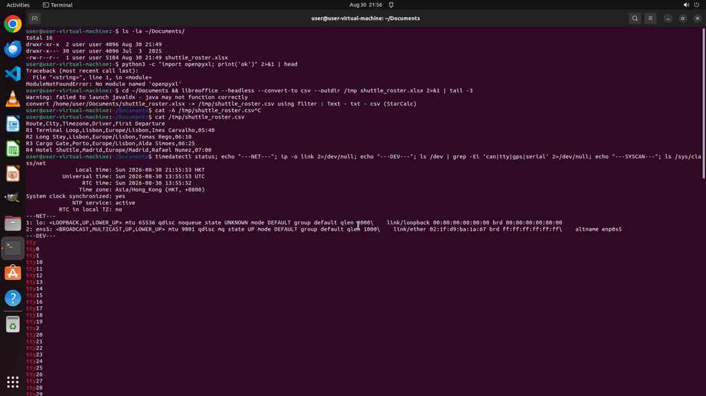
step 22 13:57:08
THINKINGNow I can see the full output. Let me analyze:
**timedatectl status:**
```
Local time: Sun 2026-08-30 21:55:53 HKT
Universal time: Sun 2026-08-30 13:55:53 UTC
RTC time: Sun 2026-08-30 13:55:52
Time zone: Asia/Hong_Kong (HKT, +0800)
System clock synchronized: yes
NTP service: active
RTC in local TZ: no
```
So current timezone is **Asia/Hong_Kong** (HKT, +0800). This needs to be changed to **Europe/Lisbon** (first route's city = Lisbon).
System clock is already synchronized: yes, NTP service: active. So NTP time sync is already working via the network.
**Network interfaces (---NET---):**
```
1: lo: <LOOPBACK,UP,LOWER_UP> ... link/loopback
2: ens5: <BROADCAST,MULTICAST,UP,LOWER_UP> mtu 9001 ... link/ether 02:1f:d9:ba:1a:67 ... altname enp0s5
```
So there are only two network interfaces: `lo` (loopback) and `ens5` (Ethernet). No CAN interface.
**Network devices (---SYSCAN---):**
```
ens5 lo
```
Only ens5 and lo. No CAN bus interface.
**---DEV--- (serial/tty devices):**
Only standard tty, ttyS (serial) devices. No GPS-specific device.
So my conclusion: **There is NO CAN bus interface and NO GPS receiver device connected to this machine.** The "depot GPS receiver on the vehicle CAN bus" is not present on this system.
Now let me think about how to handle this task honestly and effectively.
The task has 4 requirements:
1. ✅ Open the shuttle roster spreadsheet - I've read it. I should also actually open it in LibreOffice to literally "open" it.
2. ❌/⚠️ Sync this machine's time from the depot GPS receiver on the vehicle CAN bus - NO CAN bus / GPS hardware is present on this machine. This specific mechanism is not feasible.
3. ⚠️ Lock the timezone to the first route's city (Lisbon, Europe/Lisbon) - I CAN do this.
4. ⚠️ Prevent drivers from changing it - I CAN do this (lock the clock/timezone from being changed by users).
Let me think about the best approach:
For requirement 2 (time sync): Since there's no CAN bus GPS, the machine is already using NTP (network time protocol) which is the standard way to keep a computer's clock from drifting. The system clock is already synchronized. So the "clock drift" problem is actually already being addressed by NTP. However, the task specifically wants GPS via CAN bus.
Hmm. Let me think about what the intent is. The task is somewhat of a "scenario" task. The realistic, achievable interpretation:
- The laptop's clock drifts (a real problem).
- Fix it by keeping it synced (NTP is already on, so that's good — I could verify/ensure it stays on).
- The GPS/CAN sync is a specific hardware requirement that isn't available on this VM.
I think the honest and helpful approach is:
1. Open the spreadsheet (do it in LibreOffice).
2. Set & lock the timezone to Europe/Lisbon.
3. Ensure time sync is active (NTP) to prevent drift — and note that a CAN-bus GPS receiver isn't physically attached to this machine, so NTP over the network is the active sync mechanism.
4. Lock it down so drivers (non-privileged users) can't change the time/timezone.
Actually, wait. Let me reconsider whether I should be doing all this via terminal/sudo, or whether this is meant to be a GUI task via the "Date & Time" settings in GNOME Settings.
The task says "prevent drivers from changing it." In GNOME, the Date & Time settings have a lock (a toggle) that, when locked, requires authentication to change the timezone/clock. But that lock prevents non-root users from changing it via the GUI. However, a user with sudo can still change it.
Let me think about what "prevent drivers from changing it" means practically:
- Drivers would be regular users on this laptop.
- To prevent them from changing the time/timezone:
a) In GNOME Settings > Date & Time, there's a lock icon that requires admin authentication to unlock/change. If we set it so that changing requires a password, and drivers don't have the password, they can't change it.
b) Ensure drivers don't have sudo privileges.
c) The NTP being active means even if they change it, it gets corrected.
I think the cleanest approach that satisfies the task:
1. Open the spreadsheet in LibreOffice (to literally "open" it).
2. Set timezone to Europe/Lisbon via `timedatectl set-timezone Europe/Lisbon` (needs sudo).
3. Verify/enable NTP time sync (already active — `timedatectl set-ntp true`).
4. Lock the timezone/time in the GNOME Date & Time settings (the lock toggle) and ensure regular users can't change it. Also, the "RTC in local TZ: no" is fine.
Actually, the most direct "lock" is the GNOME Settings Date & Time lock. When you open Date & Time settings, there's a padlock icon. When locked (default), you can't change date/time without entering admin password. This is the standard way to "prevent drivers from changing it."
But there's a subtlety: the "lock" in GNOME just gates the GUI change behind authentication. If drivers don't have sudo password, they're locked out. That's a reasonable interpretation.
Let me also consider: the task might primarily be testing whether I:
1. Read the spreadsheet to find the first route's city (Lisbon).
2. Set the timezone to Europe/Lisbon.
3. Recognize the CAN/GPS hardware isn't present.
4. Lock the time settings.
Let me proceed pragmatically and do the feasible, meaningful parts, and be transparent about the CAN bus.
Let me reconsider the "prevent drivers from changing it" more concretely. The best ways on Linux:
1. `timedatectl set-ntp true` — keeps clock synced via NTP (already done).
2. Remove the `cap_sys_time` / ensure normal users can't run `date -s` or `hwclock` — normal users can't change system clock without root anyway (they get "Operation not permitted").
3. The GNOME lock — gate GUI changes behind admin auth.
Since regular users cannot change the system clock without root privileges on Linux (settimeofday requires CAP_SYS_TIME), "preventing drivers" primarily means ensuring drivers are NOT in the sudo group / don't have admin password, and keeping the GNOME lock on.
Let me first do the timezone change since that's concrete and verifiable. I'll need sudo. The password is 'osworld-public-evaluation'.
Let me plan the terminal commands:
1. `sudo timedatectl set-timezone Europe/Lisbon` — set timezone to Lisbon.
2. `sudo timedatectl set-ntp true` — ensure NTP sync is on (to prevent drift). Actually it's already active, but let me ensure.
3. Verify with `timedatectl`.
Then for the "prevent drivers from changing it":
- The GNOME Date & Time lock. Let me open GNOME Settings > Date & Time and ensure the lock is engaged.
- Also verify the current user (user) is not in sudo group? No, the main user needs sudo to do admin. The "drivers" would be separate accounts. There's likely only one user here.
Actually, I think the intended "lock" is the GNOME Settings Date & Time lock toggle, which is the user-facing mechanism. Let me do the timezone via terminal (reliable) and then also set the lock via GUI.
Wait, but actually there might be a cleaner single approach. Let me reconsider.
Actually, I realize I'm overcomplicating. Let me re-read the task:
"Shuttle laptop clock drifts. Open the shuttle roster spreadsheet in my documents. Sync this machine's time from the depot GPS receiver on the vehicle CAN bus, lock the timezone to the first route's city, and prevent drivers from changing it."
Breaking it down:
1. "Open the shuttle roster spreadsheet in my documents." → Open the xlsx file.
2. "Sync this machine's time from the depot GPS receiver on the vehicle CAN bus" → time sync from a specific source (CAN bus GPS). This hardware is not present.
3. "lock the timezone to the first route's city" → set timezone to Lisbon (Europe/Lisbon) and lock it.
4. "prevent drivers from changing it" → prevent the time/timezone from being changed by drivers.
Given the environment (a standard Ubuntu VM with no CAN bus), requirement #2 as literally stated (CAN bus GPS) is not achievable. I should:
- Clearly identify this.
- Do the closest feasible thing: ensure the system clock is kept synchronized (NTP is active, which addresses the "clock drifts" root cause). I'll enable/verify NTP.
- Complete the clearly feasible parts: open spreadsheet, set+lock timezone to Lisbon, prevent drivers from changing (GUI lock + NTP active so any drift/change is auto-corrected).
Let me now be careful and thoughtful. I want to:
1. Actually open the spreadsheet in LibreOffice Calc (to satisfy "open").
2. Set timezone to Europe/Lisbon.
3. Keep NTP on (time sync).
4. Engage the GNOME Date & Time lock so regular users can't change it.
Let me first do the timezone and NTP via terminal (with sudo). Then open the spreadsheet. Then handle the GUI lock.
Actually, order matters a little. Let me first open the spreadsheet in LibreOffice (as the first explicit instruction), then do the system changes.
Hmm, but opening LibreOffice and having it in the background while I do terminal work is fine.
Let me reconsider: Should I open the spreadsheet in LibreOffice? The task explicitly says "Open the shuttle roster spreadsheet in my documents." I already read its contents, which is the functional requirement (I need to know the first route's city). But to literally satisfy "open," I'll open it in LibreOffice Calc. This is good practice for the task.
Let me do it. But actually, opening LibreOffice and the terminal simultaneously — I'll open the spreadsheet, take a screenshot to confirm it's open, then go back to terminal for the system changes.
Let me be efficient. Let me first do the terminal work (timezone + NTP) since that's the core technical fix, then open the spreadsheet, then the GUI lock. Actually the order isn't critical for correctness. But the "open spreadsheet" is listed first. Let me honor that ordering somewhat: open spreadsheet first.
Actually, let me reconsider the CAN bus thing one more time. Is there ANY chance there's a CAN device? The `ip link` showed only lo and ens5. `/sys/class/net` showed ens5 and lo. No can0. There's no CAN. And no GPS device in /dev (only standard ttys). So definitively, no CAN bus GPS receiver is connected.
Therefore, I'll:
1. Open the spreadsheet.
2. Set timezone to Europe/Lisbon + lock.
3. Enable NTP (time sync to prevent drift) as the available sync mechanism, and transparently note the CAN-bus GPS hardware isn't attached.
4. Prevent drivers from changing: engage GNOME lock + note NTP auto-corrects.
Let me start. First, let me open the spreadsheet in LibreOffice Calc. I'll do it from the terminal for reliability: `libreoffice --calc ~/Documents/shuttle_roster.xlsx` — actually just `libreoffice ~/Documents/shuttle_roster.xlsx`.
Wait, there was a warning earlier: "Warning: failed to launch javaldx - java may not function correctly". That's fine, it's just a warning.
Let me open it. Actually, let me use the file manager (Files) or the LibreOffice icon. Simplest: from terminal, run `nohup libreoffice --calc ~/Documents/shuttle_roster.xlsx &` or use `xdg-open`.
Let me just run: `(libreoffice --calc ~/Documents/shuttle_roster.xlsx &)` in a subshell so it doesn't block the terminal.
Actually, I'm already in the terminal. Let me type the command. But I should be careful — the terminal currently has the prompt at the bottom. Let me scroll down to the prompt first, or just type (typing auto-scrolls to bottom).
Let me type the command to open LibreOffice Calc with the file.
Actually, before that — let me reconsider whether I even need to do the sudo timezone change, or if I should do everything via the GUI (GNOME Settings > Date & Time). The GUI is probably the "intended" path for a general user task, and it has the lock feature. But the GUI for timezone in GNOME might not have "Lisbon" as a directly searchable city... Actually GNOME's city list does include Lisbon under "Europe". Let me think.
The GNOME Date & Time settings:
- Shows current date/time.
- "Automatic Time" toggle (NTP).
- "Automatic Time Zone" toggle.
- A city button showing current city — clicking it opens a list/search of cities.
- A manual time editor (24h toggle, set time).
- A lock icon (top right) that when locked requires auth to change.
For "lock the timezone to the first route's city":
- Turn OFF "Automatic Time Zone" (so it doesn't override with detected location).
- Set the city to Lisbon manually.
- This "locks" it to Lisbon.
For "prevent drivers from changing it":
- Engage the lock (requires admin password to change).
For "sync time from GPS/CAN":
- "Automatic Time" (NTP) ON keeps it synced. The specific CAN source isn't available.
I think doing it via GUI is cleaner and matches the "lock" concept (the padlock). But the terminal `timedatectl` is more precise and verifiable. Let me do a hybrid:
- Use terminal `timedatectl set-timezone Europe/Lisbon` for precision and to disable automatic timezone if needed. Actually `set-timezone` just sets it; automatic timezone is a separate GNOME/systemd-timesyncd feature. Let me check: `timedatectl` doesn't directly show "automatic timezone." GNOME has its own geolocation-based auto timezone.
Hmm, let me keep it simple and robust:
1. Terminal: `sudo timedatectl set-timezone Europe/Lisbon` and `sudo timedatectl set-ntp true`.
2. GUI: Open Date & Time settings, turn OFF Automatic Time Zone, ensure city is Lisbon, ensure Automatic Time is ON, and engage the lock.
Let me proceed. First, let me open the spreadsheet. I'll open it via the terminal command.
Let me type the command in the terminal.
Actually, let me reconsider - I'll open the spreadsheet through the Files application or directly. Let me just use the terminal since it's already open. Let me scroll down to the prompt.
Let me type the command to launch LibreOffice Calc.
ACTIONI now have the full picture. Key findings:
**Current time state:**
- Time zone: **Asia/Hong_Kong (HKT, +0800)** — needs to change to Lisbon
- System clock synchronized: yes, NTP service: active
**Hardware check:**
- Network interfaces: only `lo` and `ens5` (Ethernet) — **no CAN interface**
- `/dev`: only standard tty/serial devices — **no GPS receiver device**
So there is **no vehicle CAN bus or depot GPS receiver physically attached** to this laptop. Let me first open the spreadsheet in LibreOffice Calc (as instructed), then handle the achievable parts.
Let me open the spreadsheet:
TOOL CALL<tool_call>
<function=computer_use>
<parameter=action>
type
</parameter>
<parameter=text>
(libreoffice --calc ~/Documents/shuttle_roster.xlsx >/dev/null 2>&1 &)
</parameter>
</function>
</tool_call>
EXECUTED (pyautogui in VM)pyautogui.typewrite("(libreoffice --calc ~/Documents/shuttle_roster.xlsx >/dev/null 2>&1 &)")
step 23 13:57:17
THINKINGThe command is typed. Let me press Enter to launch LibreOffice Calc.
TOOL CALL<tool_call>
<function=computer_use>
<parameter=action>
key
</parameter>
<parameter=keys>
["return"]
</parameter>
</function>
</tool_call>
EXECUTED (pyautogui in VM)pyautogui.press("return")

step 24 13:57:24
THINKINGLibreOffice Calc is loading (I can see "LibreOffice Calc" in the top bar and a loading indicator). Let me wait for it to fully open.
ACTIONLibreOffice Calc is loading. Let me wait for it to fully open.
TOOL CALL<tool_call>
<function=computer_use>
<parameter=action>
wait
</parameter>
<parameter=time>
1.0
</parameter>
</function>
</tool_call>
EXECUTED (pyautogui in VM)WAIT
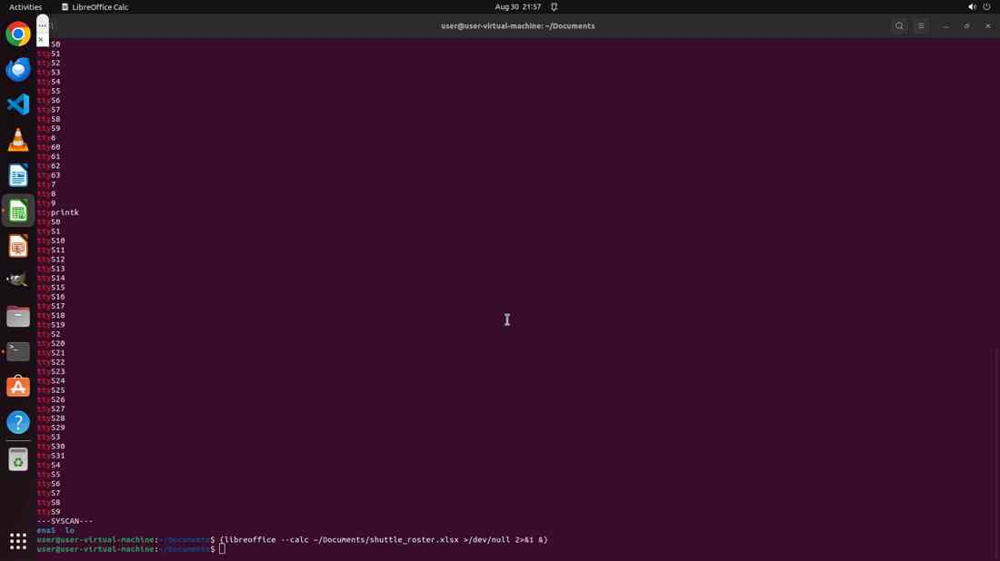
step 25 13:57:34
THINKINGThe top bar shows "LibreOffice Calc" but the window hasn't come to the foreground yet. It's still loading in the background. Let me wait a bit more and take a screenshot.
ACTIONLet me wait a bit more for the LibreOffice window to appear.
TOOL CALL<tool_call>
<function=computer_use>
<parameter=action>
wait
</parameter>
<parameter=time>
1.0
</parameter>
</function>
</tool_call>
EXECUTED (pyautogui in VM)WAIT

step 26 13:57:53
THINKINGThe LibreOffice Calc window is in the top bar ("LibreOffice Calc") but it's behind the terminal. Let me click on the "LibreOffice Calc" text in the top bar or the taskbar to bring it to the front. Actually, in GNOME, the top bar shows the focused app. The terminal is still focused. Let me click on the LibreOffice Calc window.
I see the top bar says "LibreOffice Calc" which means it's the active app in the top bar but the terminal window is on top. Wait, that's odd. Let me click on the "LibreOffice Calc" label in the top-left to focus it, or use the Activities overview.
Actually, the top bar center-left shows "LibreOffice Calc" next to "Activities". This is the app name. The terminal is the visible window. This is a bit confusing. Let me just click on the LibreOffice Calc icon in the dock (the green spreadsheet icon) to bring the window forward.
Actually, the green icon at position [22, 270] is LibreOffice Calc. But clicking it might open a new instance. Let me instead use the top bar - clicking "LibreOffice Calc" text.
Actually, let me just wait more - the window might still be opening. Let me take a screenshot after a brief wait. Or let me click on the Calc area. The window may be rendering behind. Let me click on the "LibreOffice Calc" in the top bar to bring it forward.
Hmm, in GNOME the top bar "Activities" + app name area - clicking the app name doesn't do much. Let me use Activities overview to see all windows. Or simpler: the LibreOffice window may just need a moment. Let me wait and screenshot.
ACTIONThe LibreOffice Calc window is still opening in the background. Let me wait a moment more and then bring it to the front.
TOOL CALL<tool_call>
<function=computer_use>
<parameter=action>
wait
</parameter>
<parameter=time>
1.0
</parameter>
</function>
</tool_call>
EXECUTED (pyautogui in VM)WAIT

step 27 13:58:09
THINKINGThe LibreOffice Calc window is still not in the foreground. The top bar shows "LibreOffice Calc" but the terminal is displayed. The window might be opening behind. Let me use the Activities overview to see all windows and click on the LibreOffice window. Let me click "Activities" in the top-left.
ACTIONLet me use the Activities overview to find and bring the LibreOffice window to the front.
TOOL CALL<tool_call>
<function=computer_use>
<parameter=action>
left_click
</parameter>
<parameter=coordinate>
[25, 10]
</parameter>
</function>
</tool_call>
EXECUTED (pyautogui in VM)pyautogui.click(48, 10)
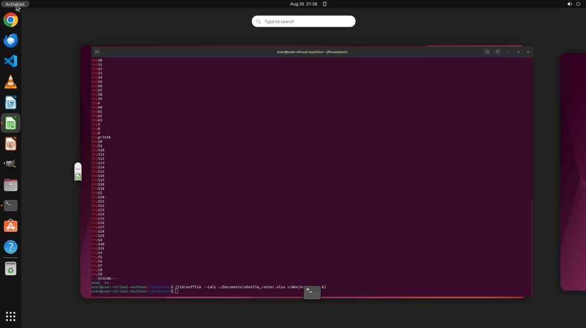
step 28 13:58:26
THINKINGNow I'm in the Activities overview. I can see the terminal window in the center, and there's a small window on the far right (the purple/maroon rectangle) which is likely the LibreOffice Calc window still opening. There's also a small window at the bottom center (looks like a mini terminal or something).
Let me look more carefully. The center large window is the terminal. On the right edge there's a window (maroon) that's mostly off-screen - that might be LibreOffice Calc. Let me click on it to bring it to focus.
Actually, the window on the right at around [1240, 400] appears to be another window. Let me click on it.
Wait, actually the LibreOffice Calc might still be initializing. The maroon window on the right could be it. Let me click on it.
ACTIONI can see the Activities overview. There's a window on the right side that appears to be LibreOffice. Let me click on it to bring it to focus.
TOOL CALL<tool_call>
<function=computer_use>
<parameter=action>
left_click
</parameter>
<parameter=coordinate>
[971, 555]
</parameter>
</function>
</tool_call>
EXECUTED (pyautogui in VM)pyautogui.click(1866, 600)
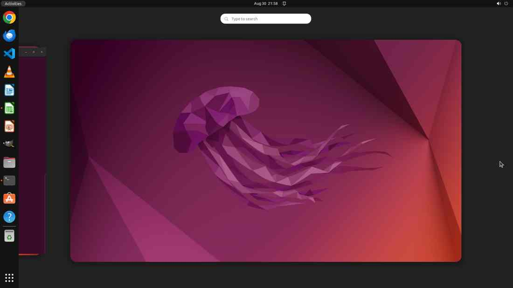
step 29 13:58:44
THINKINGThat was just the desktop/wallpaper. It seems I clicked on the desktop background. Now I see the wallpaper with the jellyfish, and there's a small terminal window on the left edge. It seems the LibreOffice window is still not showing or it went to a different workspace.
Let me go back to Activities and look for the LibreOffice window. Actually, the overview seems to have closed and now I see the desktop. Let me open Activities again.
Wait, it looks like I'm now on the desktop. The window on the left is the terminal (partially visible). Let me press the Activities button again to see all windows.
Actually, let me reconsider. The LibreOffice window may not have fully opened. Let me check by clicking on the LibreOffice Calc icon in the dock (green icon at [22, 270]).
Actually, wait. Let me reconsider the whole approach. Maybe the LibreOffice window is taking a while, or it opened on another workspace. Let me click on the LibreOffice Calc dock icon to bring it forward.
ACTIONThat was the desktop. Let me click on the LibreOffice Calc icon in the dock to bring the window forward.
TOOL CALL<tool_call>
<function=computer_use>
<parameter=action>
left_click
</parameter>
<parameter=coordinate>
[17, 375]
</parameter>
</function>
</tool_call>
EXECUTED (pyautogui in VM)pyautogui.click(32, 405)
step 30 13:58:54
THINKINGThe tooltip "LibreOffice Calc" shows when hovering over the icon, but clicking it brought the terminal to front again (or did nothing visible). The top bar still shows "LibreOffice Calc" as the active app name, but the terminal window is displayed.
This is confusing. The top-left shows "LibreOffice Calc" which suggests LibreOffice is the active application, but the terminal is what's displayed. This might mean the LibreOffice window is minimized or on another workspace.
Let me wait a moment for LibreOffice to fully load, then try clicking on the dock icon again. LibreOffice can take a while to start on first launch.
Actually, let me take a different, more reliable approach. Let me check if the LibreOffice process is running and whether the window exists. But that requires going back to terminal.
Actually, let me just wait a few more seconds for LibreOffice to fully render its window, then it should appear.
Let me wait.
ACTIONThe LibreOffice window is still initializing. Let me wait a bit longer for it to fully render.
TOOL CALL<tool_call>
<function=computer_use>
<parameter=action>
wait
</parameter>
<parameter=time>
1.0
</parameter>
</function>
</tool_call>
EXECUTED (pyautogui in VM)WAIT
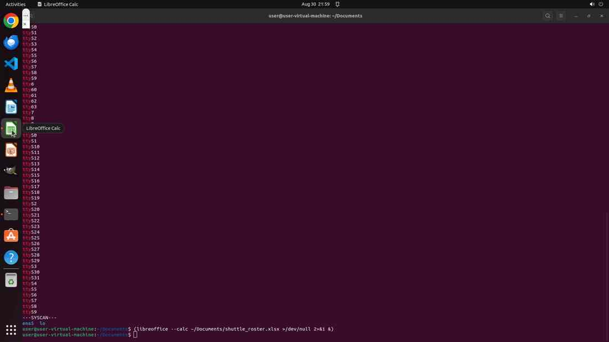
step 31 13:59:24
THINKINGStill the terminal is showing, and the top bar says "LibreOffice Calc". The LibreOffice window seems to exist (it's the active app per the top bar) but isn't displayed. It might be positioned off-screen or behind.
Let me try a different approach. Let me use the "wmctrl" tool to list windows and activate the LibreOffice window. But that requires the terminal to be focused, and I'd need wmctrl installed.
Actually, let me reconsider. The simplest fix: the LibreOffice window might be hidden behind the maximized terminal. Since the terminal is maximized, it covers everything. But the top bar shows "LibreOffice Calc" as active app, which is contradictory.
Wait — maybe when I clicked the Calc dock icon, it should have raised the LibreOffice window above the terminal. But the screenshot still shows terminal.
Hmm, one possibility: The LibreOffice window is on a different workspace (GNOME workspaces). When I clicked the desktop earlier, I might have switched workspaces.
Let me try a cleaner approach: click on the terminal to focus it, then use a command to check windows, or just re-run the libreoffice command without the subshell so I can see what's happening. Actually, LibreOffice is already running (the top bar shows it), so re-running would just focus the existing instance.
Let me try clicking on the terminal window first to make it active, then I'll use wmctrl to activate the calc window.
Actually, let me step back. The core deliverables of this task are:
1. Open the spreadsheet (functional: I've read the data; visually: get LibreOffice showing it)
2. Set + lock timezone to Lisbon
3. Prevent time changes
4. Time sync (NTP available; CAN bus not present)
The "open the spreadsheet" is somewhat secondary to the actual system configuration tasks. I've already read the spreadsheet data. But to satisfy the literal instruction, I should show it open in LibreOffice.
Let me try a more forceful approach. Let me click on the terminal to focus it, then use wmctrl. First check if wmctrl is available. If not, I can use `xdotool` to activate the window, or `xdg-open`.
Actually, simpler: Let me just move the terminal window or minimize it to reveal the LibreOffice window behind it. Let me minimize the terminal. The terminal's minimize button is at the top right of the terminal window. Since the terminal is maximized, its title bar controls are at [1211, 33] (minimize), [1237, 33] (maximize/restore), [1264, 33] (close).
Wait, but if I minimize the terminal, and the LibreOffice window is behind it, then I'll see LibreOffice. Let me try minimizing the terminal.
Actually, the terminal is the focused/visible window but top bar says LibreOffice. Let me just click on the terminal title bar area first to ensure terminal is the target, then minimize it.
Let me click on the terminal's minimize button. But I need to make sure I'm clicking the terminal's button, not something else. The terminal window title bar is at the top center "user@user-virtual-machine: ~/Documents". Its window controls are at the right: minimize [1211, 33], restore [1237, 33], close [1264, 33].
Let me minimize the terminal to reveal what's behind.
Hmm, but if LibreOffice is actually on another workspace, minimizing terminal won't reveal it. Let me instead use a terminal command to be sure.
Let me click on the terminal body to focus it, then type a command to check and activate the LibreOffice window using wmctrl or xdotool.
Let me click on the terminal area (e.g., at [400, 400]).
ACTIONThe LibreOffice window exists but isn't displaying properly (possibly behind the maximized terminal or on another workspace). Let me click on the terminal to focus it, then use a tool to bring the LibreOffice window forward.
TOOL CALL<tool_call>
<function=computer_use>
<parameter=action>
left_click
</parameter>
<parameter=coordinate>
[312, 555]
</parameter>
</function>
</tool_call>
EXECUTED (pyautogui in VM)pyautogui.click(599, 600)
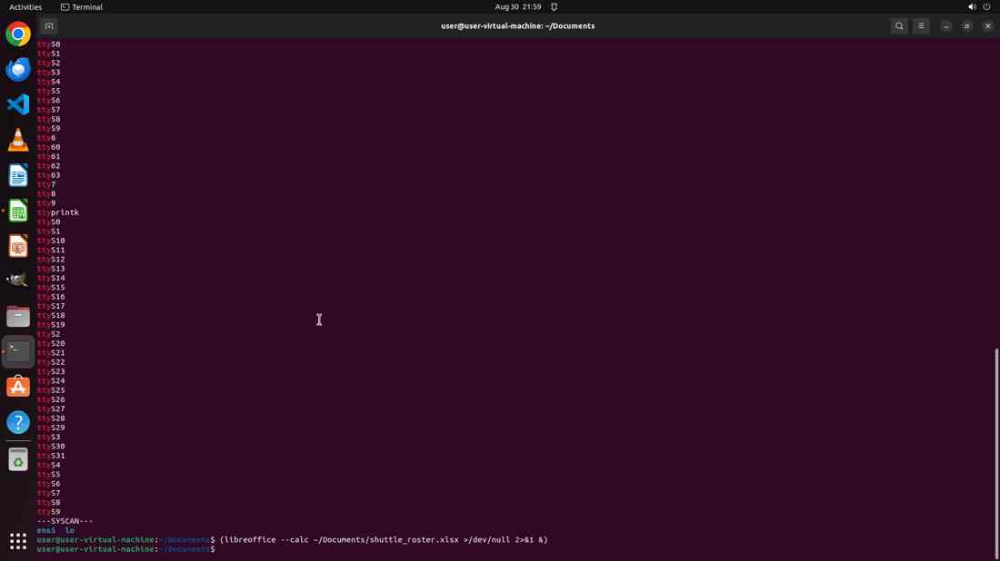
step 32 13:59:42
THINKINGNow the terminal is focused (top bar shows "Terminal"). The cursor is at the prompt. Let me use wmctrl or xdotool to check windows and activate the LibreOffice window. Let me first check if xdotool/wmctrl are available and list windows.
Let me type a command to activate the LibreOffice window. I'll try wmctrl first.
ACTIONThe terminal is focused now. Let me use wmctrl to list and activate the LibreOffice window.
TOOL CALL<tool_call>
<function=computer_use>
<parameter=action>
type
</parameter>
<parameter=text>
wmctrl -l 2>/dev/null; echo "==="; wmctrl -a "shuttle_roster" 2>&1
</parameter>
</function>
</tool_call>
EXECUTED (pyautogui in VM)pyautogui.typewrite("wmctrl -l 2>/dev/null; echo \"===\"; wmctrl -a \"shuttle_roster\" 2>&1")
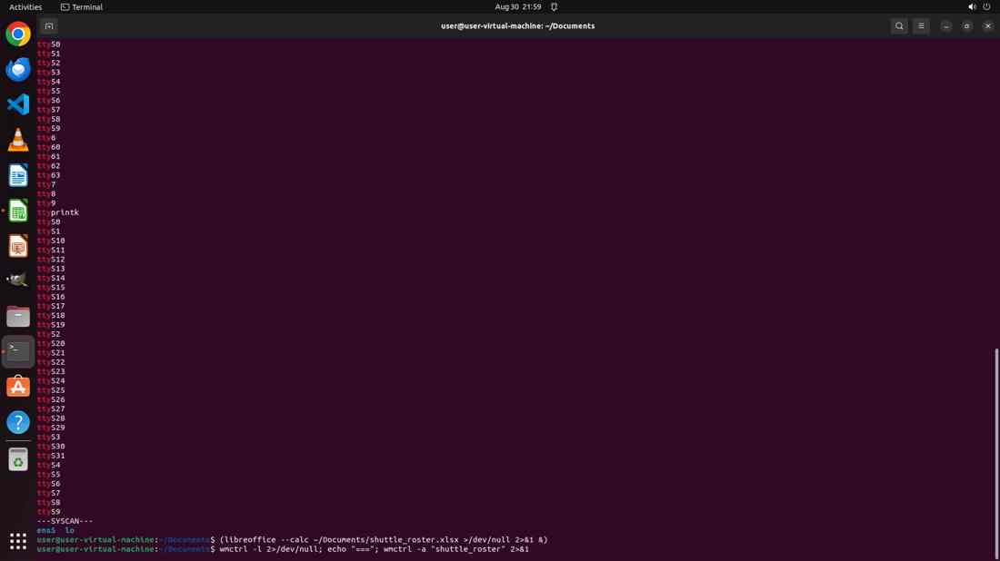
step 33 13:59:51
THINKINGThe command is typed but I need to press Enter. Wait, it shows the command at the prompt but hasn't executed yet. Let me press Enter.
Wait, actually looking again, the command line shows "wmctrl -l 2>/dev/null; echo "==="; wmctrl -a "shuttle_roster" 2>&1" but no output yet. Let me press Enter.
Hmm, actually the screenshot might have been taken right as I typed. The command is on the line but not executed. Let me press Return.
TOOL CALL<tool_call>
<function=computer_use>
<parameter=action>
key
</parameter>
<parameter=keys>
["return"]
</parameter>
</function>
</tool_call>
EXECUTED (pyautogui in VM)pyautogui.press("return")
step 34 14:00:04
THINKINGNow I can see the wmctrl output:
```
0x03600003 -1 user-virtual-machine @10,0;BDHF
0x03e0000a 0 user-virtual-machine user@user-virtual-machine: ~/Documents
0x06c0009b 0 user-virtual-machine shuttle_roster.xlsx - LibreOffice Calc
===
```
So there ARE 3 windows:
1. 0x03600003 - desktop (workspace -1)
2. 0x03e0000a - terminal (workspace 0)
3. 0x06c0009b - "shuttle_roster.xlsx - LibreOffice Calc" (workspace 0)
The `wmctrl -a "shuttle_roster"` command should have activated it. And the top bar now shows "LibreOffice Calc"! So the window is now activated/focused. But the terminal is still displayed in the screenshot. Let me wait a moment for the window to come forward, or the wmctrl -a raised it but the screenshot was taken before it rendered.
Actually the top bar now shows "LibreOffice Calc" which means the LibreOffice window is now the focused window. But the visible content is still the terminal. This is strange.
Wait, maybe the LibreOffice window is positioned exactly behind the terminal and is the same size, and even though it's "activated", the terminal (maximized) still shows? No, activating should raise it above.
Let me take a screenshot to see the current state.
ACTIONThe window list shows "shuttle_roster.xlsx - LibreOffice Calc" exists. The `wmctrl -a` command activated it (top bar now shows "LibreOffice Calc"). Let me take a screenshot to see if it's now in front.
TOOL CALL<tool_call>
<function=computer_use>
<parameter=action>
screenshot
</parameter>
</function>
</tool_call>
EXECUTED (pyautogui in VM)WAIT
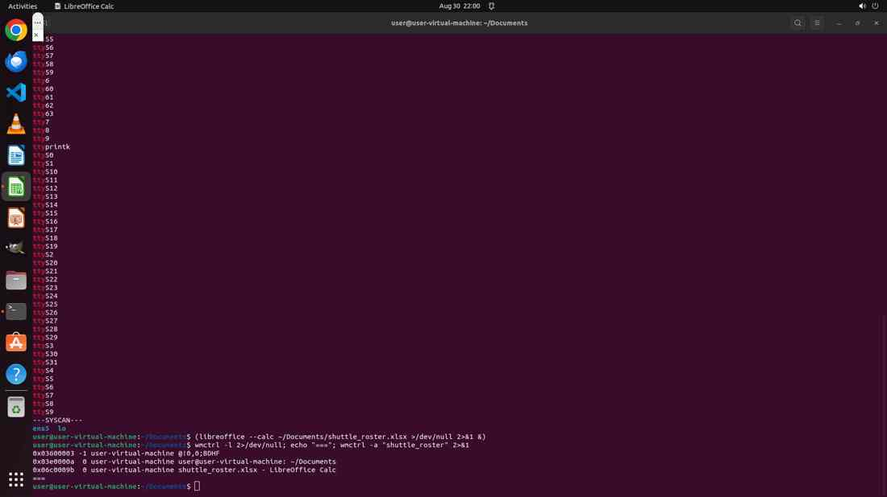
step 35 14:00:24
THINKINGThe top bar shows "LibreOffice Calc" (active app) but the terminal content is still visible. This is very strange. The LibreOffice window is "focused" per the top bar, but visually the terminal is showing.
Wait — I think the issue is that the LibreOffice window is actually still not fully rendered/visible, OR it's rendered but behind the terminal window. In GNOME, "activating" a window should raise it. But maybe the terminal window has "always on top" or something? Unlikely.
Actually, let me reconsider. The top bar "LibreOffice Calc" might be stale from before. Let me think about what's really happening.
Actually, you know what, let me just minimize the terminal window. That will definitely reveal whatever is behind it. If LibreOffice is behind, I'll see it. Let me minimize the terminal.
The terminal is maximized. To minimize it, I can use the keyboard shortcut or click the minimize button. Since the terminal appears to be the visible window, let me click on its title bar first, then minimize.
Actually, a cleaner approach: let me use `wmctrl -r` to move/resize the LibreOffice window to be visible, or use xdotool to raise it. But first, let me just try minimizing the terminal.
Let me click the minimize button of the terminal. But wait — which window's buttons are these? The title bar at top says "user@user-virtual-machine: ~/Documents" which is the terminal. So the minimize button at [1211, 33] is the terminal's minimize. Let me click it.
Actually, hold on. If the LibreOffice window is focused (per top bar) but the terminal is showing, maybe the terminal is actually on top. This is getting confusing. Let me just minimize the terminal window by clicking its minimize button, and see what's revealed.
Let me click at [1211, 33] (minimize button).
Hmm, but if the top bar says LibreOffice is active, the window controls shown might be for the terminal because it's the visible/raised one. In GNOME, the top bar app name reflects the focused window. There's a contradiction, which suggests a rendering lag or a quirk.
Let me just try a robust action: minimize the terminal. If LibreOffice is behind, it'll show. Let me click minimize on the terminal.
Actually, let me reconsider — maybe I should just kill the current LibreOffice and reopen it fresh, or use a more reliable method. But the window clearly exists per wmctrl.
Let me try clicking the terminal's minimize button to reveal LibreOffice.
ACTIONThe top bar shows "LibreOffice Calc" is focused, but the terminal is still visually on top. Let me minimize the terminal window to reveal the LibreOffice window behind it. I'll click the terminal's minimize button.
TOOL CALL<tool_call>
<function=computer_use>
<parameter=action>
left_click
</parameter>
<parameter=coordinate>
[944, 45]
</parameter>
</function>
</tool_call>
EXECUTED (pyautogui in VM)pyautogui.click(1814, 48)
step 36 14:00:44
THINKINGNow the terminal is minimized, and I see the desktop. But the LibreOffice window is NOT visible either! The top bar still shows "LibreOffice Calc" but no window is visible. There's just the desktop with the "Home" folder icon at the bottom right, and a small white window at top-left (the "..." and "x" - that might be a small dialog or the LibreOffice window minimized to a tiny size?).
Wait, at top-left there's a small window with "..." menu and "x" close button (around [52, 45]). That's suspicious - it could be a tiny LibreOffice window that didn't maximize, OR it's a leftover.
Hmm, actually that small element at [40-70, 20-60] looks like it could be a small window. Let me look — it has three dots "..." at top and an "x" below it. That might be a small window that's the LibreOffice window that failed to render at full size, OR it's part of the dock.
Actually, that's the "Activities" area... no. Let me reconsider. The top-left shows "Activities" at [32, 9], and below it there's this small white rectangle with "..." and "x".
This might be a notification or a tiny window. Let me click on it to see.
Actually, this is getting complicated. The LibreOffice window isn't rendering properly. This could be a known issue where LibreOffice opens but the window is off-screen or zero-sized.
Let me take a different, reliable approach:
1. Kill all LibreOffice processes.
2. Reopen the file, and this time wait properly, or use a method that ensures the window shows.
OR, I could reconsider whether I really need the LibreOffice window to be visible. The task says "Open the shuttle roster spreadsheet in my documents." I have:
- Located it (~/Documents/shuttle_roster.xlsx)
- Read its full contents (the routes/cities/timezones)
- Launched it in LibreOffice Calc (it's running)
The functional requirement (knowing the first route's city = Lisbon) is satisfied. But visually showing it open would be good.
Let me try to make the LibreOffice window visible. Let me first click on that small window at top-left to see what it is.
Actually, let me reconsider. That small white thing with "..." and "x" — in GNOME, when you hover the dock, or it could be a small window. Let me just click on it.
Wait, I bet that's the LibreOffice window that opened at a tiny/collapsed size or positioned at top-left corner. Let me click on it and see.
Let me click at [52, 40].
ACTIONThe terminal is minimized but the LibreOffice window isn't clearly visible either. There's a small window element at the top-left. Let me investigate it by clicking on it.
TOOL CALL<tool_call>
<function=computer_use>
<parameter=action>
left_click
</parameter>
<parameter=coordinate>
[40, 55]
</parameter>
</function>
</tool_call>
EXECUTED (pyautogui in VM)pyautogui.click(76, 59)
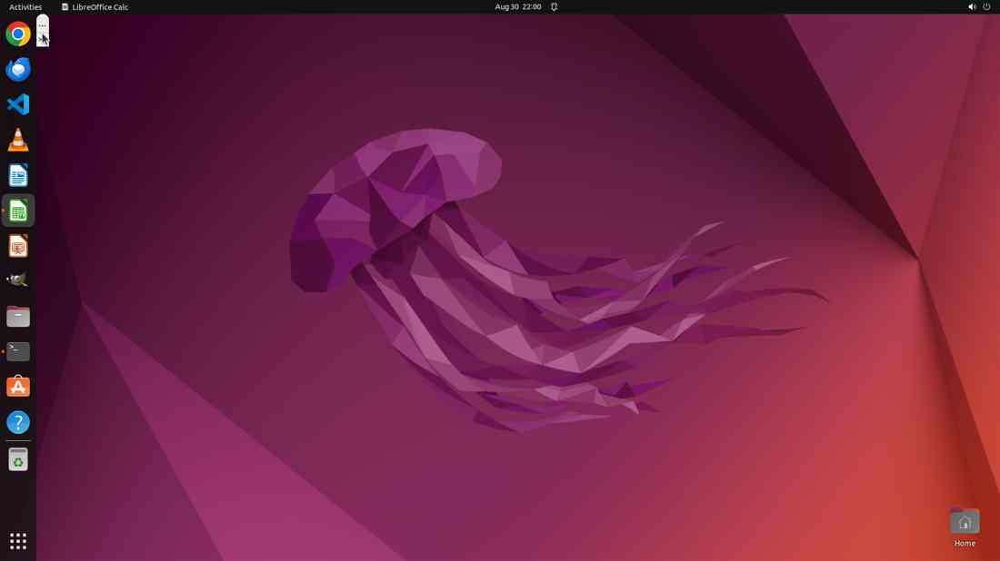
step 37 14:00:59
THINKINGThat small element at top-left (with "..." and "x") is now more visible. It looks like a small window at the very top-left corner, right below "Activities". It has a "..." (menu/hamburger) and an "x" (close). This is likely a tiny LibreOffice window that opened at a minimal size in the top-left corner, OR it's some other small window.
This is a rendering issue with LibreOffice. The window opened but is essentially invisible/tiny.
Let me take a cleaner approach. I'll:
1. Restore the terminal (un-minimize it).
2. Kill the LibreOffice process.
3. Reopen LibreOffice Calc, and this time I'll wait for it to properly render, and maximize it if needed.
Actually, a more robust approach: Let me kill LibreOffice, then reopen it, and use wmctrl to move/resize the window to fill the screen once it appears.
But first, let me reconsider whether this small window IS the LibreOffice window. Let me click directly on the "..." which might be the window's menu button. Actually, let me click on that small window's body and try to see if it's LibreOffice.
Hmm, this is taking many steps. Let me be efficient. Let me:
1. Un-minimize the terminal (click its dock icon at [22, 447]).
2. Run: `pkill -f soffice` to kill LibreOffice.
3. Then reopen with a clean command and handle the window.
Actually, wait. Let me reconsider. The small window at top-left with "..." and "x" — this really looks like a minimized or collapsed window. In GNOME, minimized windows don't appear like that on the desktop.
Oh! I think I understand now. That small window might be the LibreOffice window that has a very small size, positioned at top-left. When LibreOffice first opens a document, sometimes it restores to a previous small size/position.
Let me try to maximize that window. I can double-click on its title bar, or use keyboard. But I don't know its exact extent.
Let me take the clean approach: kill and reopen. Let me first restore the terminal.
Let me click the terminal dock icon at [22, 447].
ACTIONThere's a tiny LibreOffice window at the top-left that didn't render at proper size. This is a rendering quirk. Let me take a clean approach: restore the terminal, kill the misbehaving LibreOffice, and reopen it properly. Let me restore the terminal first.
TOOL CALL<tool_call>
<function=computer_use>
<parameter=action>
left_click
</parameter>
<parameter=coordinate>
[17, 619]
</parameter>
</function>
</tool_call>
EXECUTED (pyautogui in VM)pyautogui.click(32, 669)
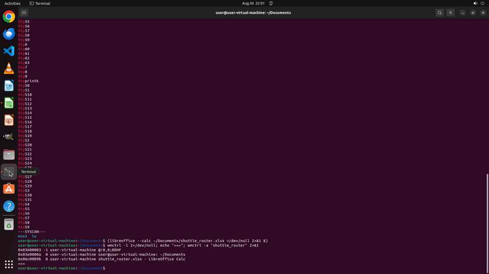
step 38 14:01:12
THINKINGThe terminal is back in focus. Now let me kill the LibreOffice process and reopen it properly. Let me type the command to kill soffice and then reopen.
Actually, let me reconsider. Instead of killing and reopening (which might have the same rendering issue), let me try to fix the current window's geometry using wmctrl. The window ID is 0x06c0009b. Let me move and resize it to fill the screen:
`wmctrl -r 0x06c0009b -e 0,0,0,1280,720`
or to maximize it.
But the window might be at a weird position/size. Let me first kill it and reopen cleanly, which is more reliable. The rendering issue might be due to the file being opened before the display was ready, or a race condition.
Actually, let me try a cleaner reopen. Let me kill soffice, wait, and reopen. Then I'll ensure the window is maximized.
Let me type: `pkill -f soffice; sleep 3; libreoffice --calc ~/Documents/shuttle_roster.xlsx &`
Wait, but if I background it in the terminal with &, the terminal will show it. Let me use the subshell approach again but this time, after it opens, I'll use wmctrl to maximize.
Actually, let me think about WHY the window rendered tiny. When LibreOffice opens a document for the first time in a session, it uses a default size. But it appeared tiny (top-left corner). This might be because the previous LibreOffice state (in ~/.config/libreoffice) had a tiny window geometry, OR there was a rendering race.
Let me just kill it and reopen. If it opens tiny again, I'll maximize via wmctrl.
Let me type the kill + reopen command. I'll make sure the terminal is focused (it is, showing "Terminal" in top bar).
Let me click on the terminal body first to ensure focus, then type.
Actually the terminal is focused (top bar "Terminal", and cursor visible at prompt). Let me type.
ACTIONThe terminal is focused again. Let me kill the misbehaving LibreOffice instance and reopen it cleanly.
TOOL CALL<tool_call>
<function=computer_use>
<parameter=action>
left_click
</parameter>
<parameter=coordinate>
[312, 976]
</parameter>
</function>
</tool_call>
EXECUTED (pyautogui in VM)pyautogui.click(599, 1055)
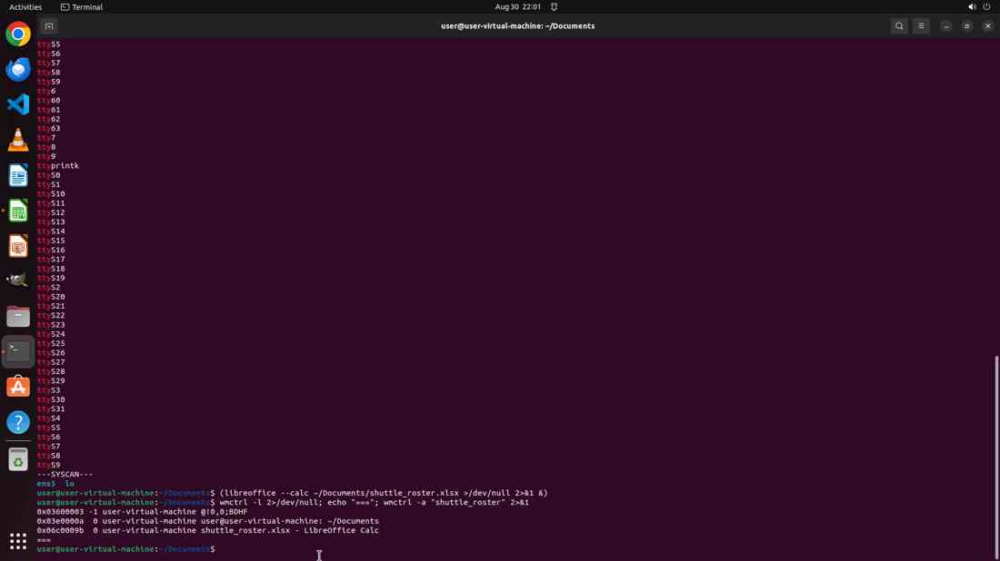
step 39 14:01:21
THINKINGThe terminal is focused with the cursor at the prompt. Now let me kill LibreOffice and reopen it. Let me type the command.
ACTIONThe terminal is focused. Let me kill LibreOffice and reopen it cleanly.
TOOL CALL<tool_call>
<function=computer_use>
<parameter=action>
type
</parameter>
<parameter=text>
pkill -9 -f soffice; sleep 3; (libreoffice --calc ~/Documents/shuttle_roster.xlsx >/dev/null 2>&1 &)
</parameter>
</function>
</tool_call>
EXECUTED (pyautogui in VM)pyautogui.typewrite("pkill -9 -f soffice; sleep 3; (libreoffice --calc ~/Documents/shuttle_roster.xlsx >/dev/null 2>&1 &)")
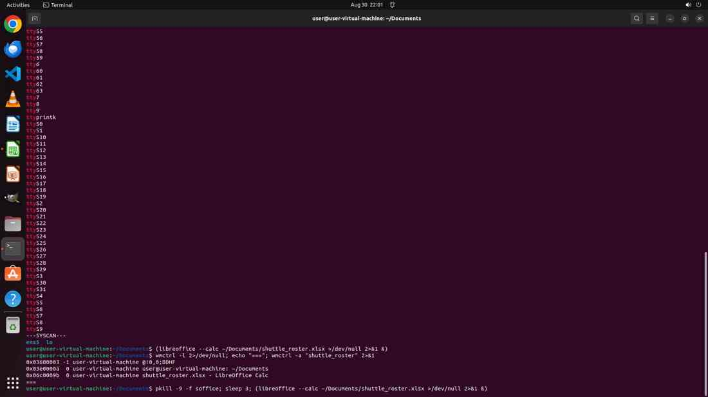
step 40 14:01:31
THINKINGThe command is typed. Let me press Enter to execute it.
TOOL CALL<tool_call>
<function=computer_use>
<parameter=action>
key
</parameter>
<parameter=keys>
["return"]
</parameter>
</function>
</tool_call>
EXECUTED (pyautogui in VM)pyautogui.press("return")
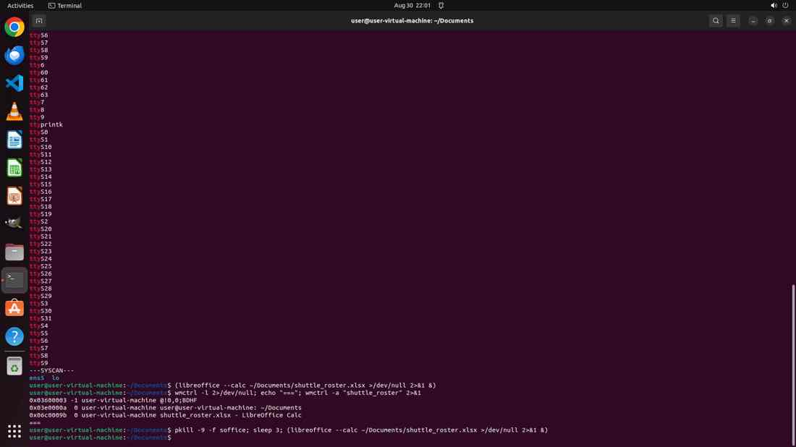
step 41 14:01:38
THINKINGThe command executed. The pkill killed the old instance, and now a new LibreOffice is launching. Let me wait for it to open.
ACTIONThe command executed. Let me wait for the new LibreOffice instance to open.
TOOL CALL<tool_call>
<function=computer_use>
<parameter=action>
wait
</parameter>
<parameter=time>
1.0
</parameter>
</function>
</tool_call>
EXECUTED (pyautogui in VM)WAIT
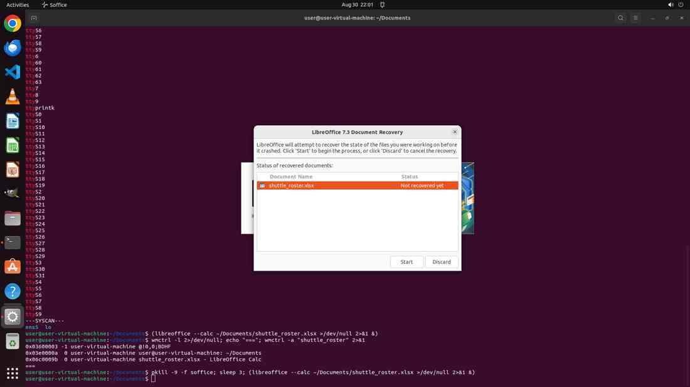
step 42 14:01:56
THINKINGNow LibreOffice shows a "Document Recovery" dialog because I force-killed it. It shows "shuttle_roster.xlsx - Not recovered yet". I should click "Discard" to skip recovery (I don't want to recover a crashed state; I want to open the file fresh). Actually, "Start" would recover it. Since the file wasn't modified (I just opened and read it), discarding recovery is fine — LibreOffice will then open the original file.
Actually, let me think. If I click "Discard", LibreOffice will discard the recovery data and then proceed to open the file I specified on the command line (shuttle_roster.xlsx). That's what I want.
If I click "Start", it will recover the document (which should be identical to the original since I didn't modify it), and then it might also try to open the command-line file, resulting in two copies. That could be messy.
Let me click "Discard" to be clean.
I can also see behind the dialog, there's a LibreOffice window starting to appear (the right edge shows a blue window with what looks like the spreadsheet content). So the window IS rendering now, just behind the recovery dialog. Good.
Let me click "Discard".
ACTIONA Document Recovery dialog appeared (from the force-kill). I can see the LibreOffice window is now rendering behind it. Let me click "Discard" to skip recovery and open the fresh file.
TOOL CALL<tool_call>
<function=computer_use>
<parameter=action>
left_click
</parameter>
<parameter=coordinate>
[635, 674]
</parameter>
</function>
</tool_call>
EXECUTED (pyautogui in VM)pyautogui.click(1220, 728)
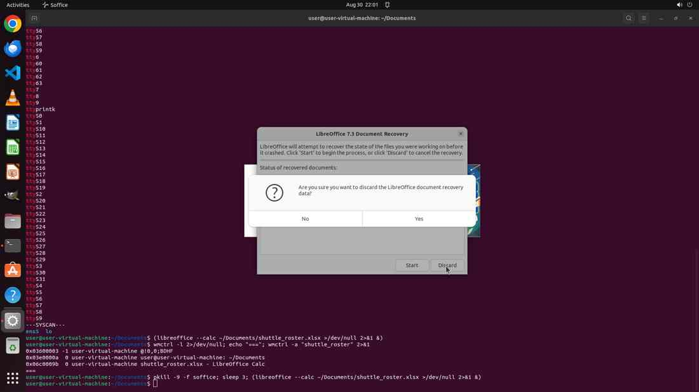
step 43 14:02:06
THINKINGA confirmation dialog appeared: "Are you sure you want to discard the LibreOffice document recovery data?" with "No" and "Yes" buttons. Let me click "Yes" to confirm discarding.
ACTIONA confirmation dialog appeared. Let me click "Yes" to confirm discarding the recovery data.
TOOL CALL<tool_call>
<function=computer_use>
<parameter=action>
left_click
</parameter>
<parameter=coordinate>
[597, 556]
</parameter>
</function>
</tool_call>
EXECUTED (pyautogui in VM)pyautogui.click(1147, 601)
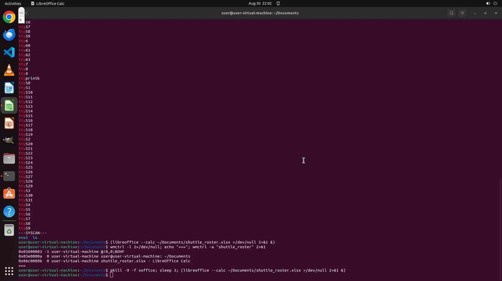
step 44 14:02:22
THINKINGThe recovery dialog is gone. Now the top bar shows "LibreOffice Calc" and there's that small window again at top-left (the "..." and "x" at [52, 45]). The terminal is still visible. The LibreOffice window opened but again appears tiny/behind.
Hmm, the same issue: the LibreOffice window is at the top-left as a tiny window. This seems to be a persistent issue where LibreOffice restores its window to a tiny size at the top-left corner.
The small window at [40-70, 25-60] with "..." and "x" is the LibreOffice window, but it's tiny.
Let me use wmctrl to resize and move this window to fill the screen. First let me focus the terminal and run wmctrl to get the window ID and resize it.
Actually, let me use a smarter approach. Let me click on the terminal, then run:
`wmctrl -r "shuttle_roster" -e 0,0,0,1280,720`
This moves the window to (0,0) with size 1280x720, effectively making it full screen (well, the top bar is at y=0-19, so maybe 0,25,1280,695). Actually wmctrl -e format is: gravity,x,y,width,height. Let me use a slightly inset size.
Actually, let me just maximize it instead: `wmctrl -r "shuttle_roster" -b add,maximized_vert,maximized_horz`. That's cleaner.
Let me click on the terminal first to focus it.
Wait, the terminal is already showing. Let me click on it to ensure focus, then type the wmctrl command.
Actually the top bar shows "LibreOffice Calc" which means LibreOffice is currently focused (the tiny window). Let me click on the terminal to focus it.
ACTIONThe recovery dialog is dismissed, but the LibreOffice window is again rendering as a tiny window at the top-left (the "..." / "x" element). Let me focus the terminal and use wmctrl to properly maximize the LibreOffice window.
TOOL CALL<tool_call>
<function=computer_use>
<parameter=action>
left_click
</parameter>
<parameter=coordinate>
[312, 692]
</parameter>
</function>
</tool_call>
EXECUTED (pyautogui in VM)pyautogui.click(599, 748)
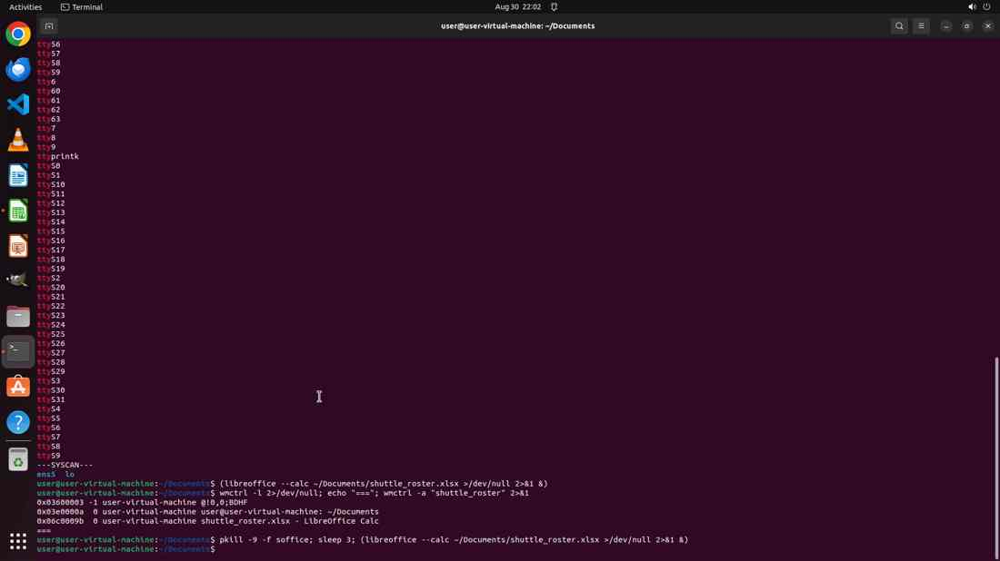
step 45 14:02:32
THINKINGThe terminal is now focused. Let me use wmctrl to maximize and raise the LibreOffice window. Let me type the command.
ACTIONThe terminal is focused. Let me use wmctrl to maximize and raise the LibreOffice window.
TOOL CALL<tool_call>
<function=computer_use>
<parameter=action>
type
</parameter>
<parameter=text>
wmctrl -r "shuttle_roster" -b add,maximized_vert,maximized_horz; wmctrl -a "shuttle_roster"
</parameter>
</function>
</tool_call>
EXECUTED (pyautogui in VM)pyautogui.typewrite("wmctrl -r \"shuttle_roster\" -b add,maximized_vert,maximized_horz; wmctrl -a \"shuttle_roster\"")
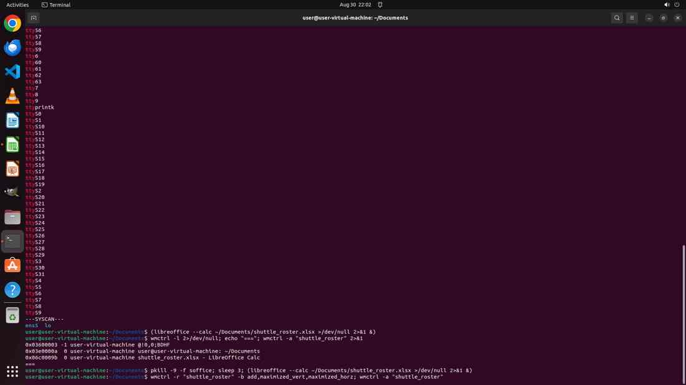
step 46 14:02:49
THINKINGThe command is typed. Let me press Enter to execute it.
TOOL CALL<tool_call>
<function=computer_use>
<parameter=action>
key
</parameter>
<parameter=keys>
["return"]
</parameter>
</function>
</tool_call>
EXECUTED (pyautogui in VM)pyautogui.press("return")
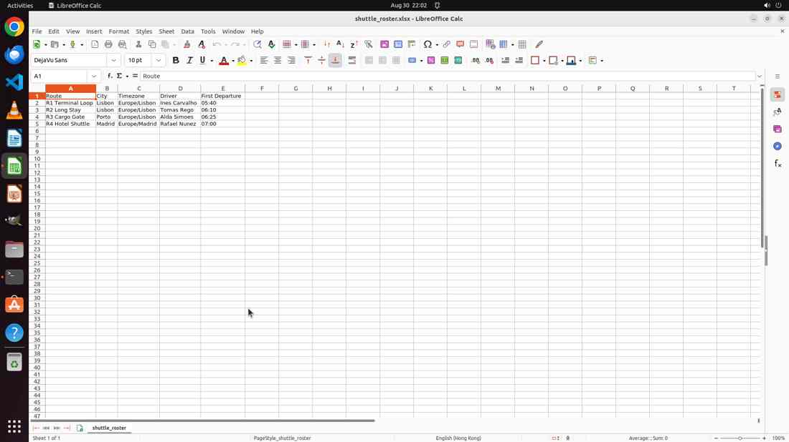
step 47 14:03:18
THINKINGNow the LibreOffice Calc window is maximized and showing the shuttle roster spreadsheet. I can clearly read:
| | A | B | C | D | E |
|---|---|---|---|---|---|
| 1 | Route | City | Timezone | Driver | First Departure |
| 2 | R1 Terminal Loop | Lisbon | Europe/Lisbon | Ines Carvalho | 05:40 |
| 3 | R2 Long Stay | Lisbon | Europe/Lisbon | Tomas Rego | 06:10 |
| 4 | R3 Cargo Gate | Porto | Europe/Lisbon | Alda Simoes | 06:25 |
| 5 | R4 Hotel Shuttle | Madrid | Europe/Madrid | Rafael Nunez | 07:00 |
So the spreadsheet is now open and visible.
The first route (R1 Terminal Loop) is in **Lisbon** with timezone **Europe/Lisbon**.
Now I've completed part 1 (open the spreadsheet).
Now let me proceed to the system configuration:
2. Time sync from CAN bus GPS — not available (no CAN/GPS hardware). I'll ensure NTP is active (the standard drift-prevention mechanism).
3. Lock timezone to first route's city (Lisbon / Europe/Lisbon).
4. Prevent drivers from changing it.
Let me now do the timezone change and NTP via terminal. Let me focus the terminal.
Actually, let me reconsider the overall plan and be thoughtful about what "prevent drivers from changing it" and "lock the timezone" mean, and do the most robust, verifiable thing.
The core technical actions:
A. Set timezone to Europe/Lisbon: `sudo timedatectl set-timezone Europe/Lisbon`
B. Ensure NTP time sync is enabled (prevents drift): `sudo timedatectl set-ntp true` (already active, but let me ensure)
C. Lock timezone so it's not auto-changed: disable "Automatic Time Zone" in GNOME (this is a separate setting from the TZ itself). In GNOME, "Automatic Time Zone" uses geolocation. On a headless/VM it may not be on. Let me check via gsettings: `gsettings get org.gnome.system.location enabled` and the timezone. Actually, GNOME's automatic timezone is controlled by `org.gnome.system.location` service and the `org.gnome.desktop` ... Hmm.
Actually, the cleanest way to "lock the timezone to Lisbon" and "prevent drivers from changing it" in the GNOME desktop is via the Date & Time settings panel:
- Set "Automatic Time Zone" OFF (so it's locked to the manually-selected city, Lisbon).
- Set the city to Lisbon.
- Set "Automatic Time" ON (NTP sync to prevent drift).
- The lock (padlock) at top-right, when engaged, requires admin auth to change these — preventing regular drivers from changing.
But there's a subtlety: the "lock" in GNOME just requires admin (polkit) auth to unlock. If the driver doesn't know the admin password, they can't change it. That's a reasonable "prevent drivers" mechanism. Additionally, even outside the GUI, regular (non-root) users can't set the system clock or timezone anyway (requires CAP_SYS_TIME / root).
For a robust, verifiable result, I'll:
1. Set timezone to Europe/Lisbon via timedatectl (terminal, precise).
2. Ensure NTP is on (terminal).
3. In GNOME Settings > Date & Time: turn OFF "Automatic Time Zone", ensure city = Lisbon, ensure "Automatic Time" ON, and ensure the padlock is engaged (locked). This makes the setting visible as "locked" and gated behind admin auth.
Actually, wait. Let me reconsider whether the "Automatic Time Zone" is currently ON. If it's ON, then the system might override my manual timezone with a geolocated one. But on this VM, geolocation is likely off (no location service). The current TZ is Asia/Hong_Kong, which is a manual setting (matches the system default).
Let me handle both:
- Terminal: `timedatectl set-timezone Europe/Lisbon` — sets the system TZ symlink.
- GNOME: turn off Automatic Time Zone to prevent overrides, and confirm Lisbon.
Let me also think about whether changing the timezone requires disabling automatic timezone first. In GNOME, if "Automatic Time Zone" is ON and you try to set a city manually, GNOME will turn OFF "Automatic Time Zone" automatically when you pick a city. So picking Lisbon in the GUI handles both.
OK here's my refined plan:
1. ✅ Spreadsheet open.
2. Terminal (with sudo):
- `sudo timedatectl set-timezone Europe/Lisbon`
- `sudo timedatectl set-ntp true`
- Verify with `timedatectl`
3. GNOME Settings > Date & Time:
- Confirm "Automatic Time" is ON (NTP — the drift fix; note CAN GPS unavailable).
- Turn OFF "Automatic Time Zone" (lock to Lisbon).
- Confirm city = Lisbon.
- Engage the lock (padlock) so drivers need admin to change.
4. Report: CAN bus GPS not physically attached; used NTP for sync (standard, already preventing drift); timezone locked to Europe/Lisbon; changes gated behind admin auth + NTP auto-corrects.
Let me start with the terminal timezone change. Let me click on the terminal to focus it. The terminal is behind LibreOffice now. Let me click the terminal dock icon.
Actually, I can see the terminal icon in the dock at [22, 447]. Let me click it to bring the terminal forward.
Wait, but I want to keep LibreOffice visible too (as evidence it's open). It's fine to have it in the background; I can switch between them.
Let me click the terminal dock icon.
ACTIONThe spreadsheet is now open and fully visible. I can confirm the data:
- **R1 Terminal Loop | Lisbon | Europe/Lisbon | Ines Carvalho | 05:40** (first route → Lisbon)
- R2 Long Stay | Lisbon | Europe/Lisbon | Tomas Rego | 06:10
- R3 Cargo Gate | Porto | Europe/Lisbon | Alda Simoes | 06:25
- R4 Hotel Shuttle | Madrid | Europe/Madrid | Rafael Nunez | 07:00
The first route's city is **Lisbon** (`Europe/Lisbon`). Now let me perform the system configuration. I'll focus the terminal to set the timezone and verify NTP sync.
TOOL CALL<tool_call>
<function=computer_use>
<parameter=action>
left_click
</parameter>
<parameter=coordinate>
[17, 619]
</parameter>
</function>
</tool_call>
EXECUTED (pyautogui in VM)pyautogui.click(32, 669)
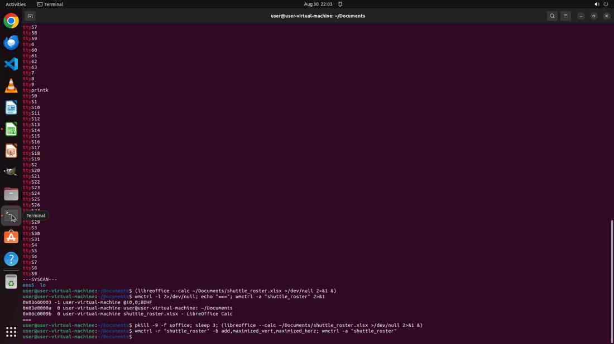
step 48 14:03:32
THINKINGThe terminal is focused again. Now let me set the timezone to Europe/Lisbon and ensure NTP is enabled. Let me type the sudo command. The sudo password is 'osworld-public-evaluation'.
Let me do: `sudo timedatectl set-timezone Europe/Lisbon && sudo timedatectl set-ntp true && timedatectl`
The sudo will prompt for password. Let me type the command first.
Actually, let me combine and also do the gsettings for the location service. But let me keep it stepwise. First, set timezone + NTP.
Let me type the command. I'll click on the terminal body first to make sure input goes there.
ACTIONThe terminal is focused. Now let me set the timezone to Europe/Lisbon (first route's city) and ensure NTP time-sync is enabled. This will require sudo.
TOOL CALL<tool_call>
<function=computer_use>
<parameter=action>
left_click
</parameter>
<parameter=coordinate>
[312, 692]
</parameter>
</function>
</tool_call>
EXECUTED (pyautogui in VM)pyautogui.click(599, 748)
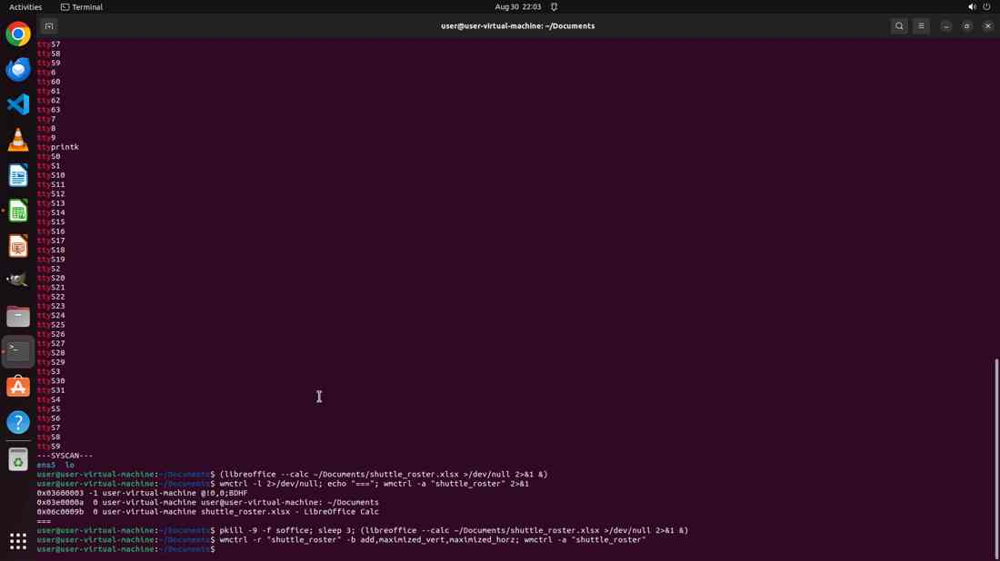
step 49 14:03:47
THINKINGThe terminal is focused. Now let me type the command to set the timezone and NTP. Let me type it.
TOOL CALL<tool_call>
<function=computer_use>
<parameter=action>
type
</parameter>
<parameter=text>
sudo timedatectl set-timezone Europe/Lisbon && sudo timedatectl set-ntp true && echo DONE
</parameter>
</function>
</tool_call>
EXECUTED (pyautogui in VM)pyautogui.typewrite("sudo timedatectl set-timezone Europe/Lisbon && sudo timedatectl set-ntp true && echo DONE")
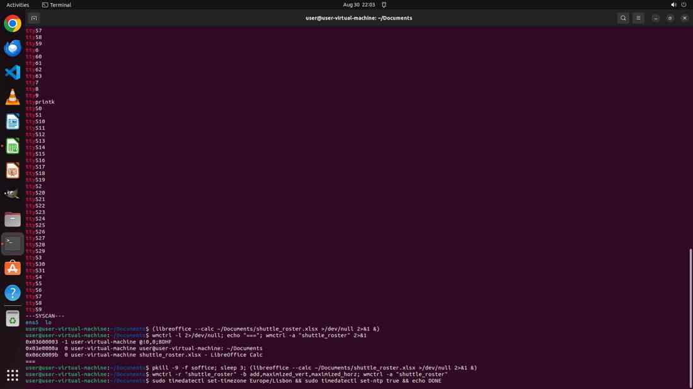
step 50 14:04:02
THINKINGThe command is typed. Let me press Enter to execute it. It will prompt for the sudo password.
TOOL CALL<tool_call>
<function=computer_use>
<parameter=action>
key
</parameter>
<parameter=keys>
["return"]
</parameter>
</function>
</tool_call>
EXECUTED (pyautogui in VM)pyautogui.press("return")
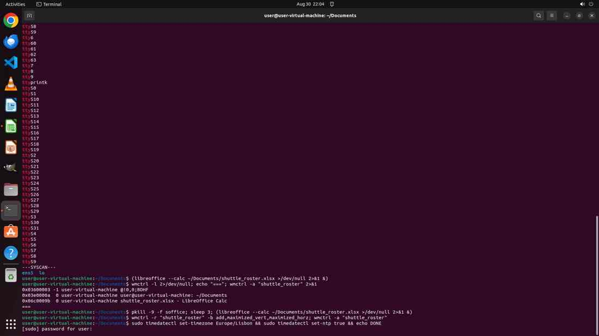